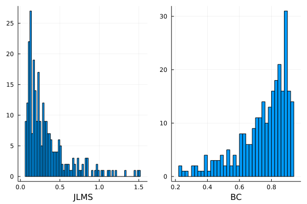
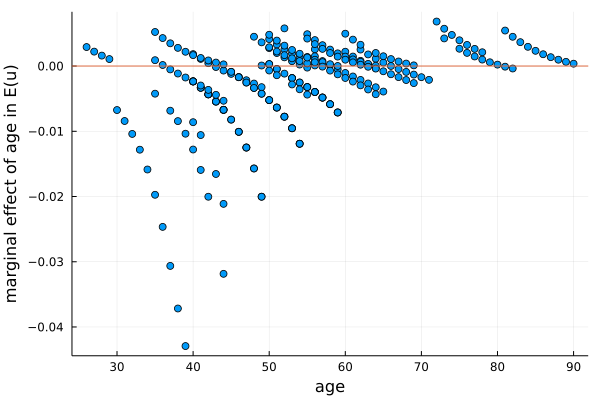

SFrontiers.jl: Stochastic Frontier Model Estimation: Simulation-Based and Analytic Methods
User Manual for Julia Implementation
© Hung-Jen Wang
wangh@ntu.edu.tw
What is it
SFrontiers.jl is a Julia package for flexible estimation of stochastic frontier models. Instead of limiting users to a small set of models with closed-form likelihoods, it provides simulation-based methods that make it practical to work with a much wider range of distributional assumptions, including three choices for the noise component (v) and eight choices for the inefficiency component (u), as well as copula dependence and selected panel-data settings, all within a unified workflow. It also takes advantage of automatic differentiation and GPU acceleration for accurate and efficient estimation.
Table of Contents
- Introduction
- Hardware and Software Requirements
- Installation and Dependencies
- Quick Start and Reference Example
- A Detailed Empirical Example
- API Reference
- Supported Models
- Working with Results
- Special Topics
- Panel Data Models
1. Introduction
This package provides a unified framework for estimating stochastic frontier (SF) models via simulation-based likelihood evaluation and, for a limited subset of models, analytic maximum likelihood estimation (MLE). The simulation-based methods, including the Maximum Simulated Likelihood Estimation (MSLE) and Monte Carlo Integration (MCI), support a broad class of distributional and dependence specifications. For the classical Normal–half-normal, Normal–truncated-normal, and Normal–Exponential models, closed-form analytic MLE is also available.
To address the traditional drawbacks of simulation-based estimation, the package uses automatic differentiation for numerical accuracy and GPU computing for speed. Monte Carlo evidence in Wang and Cheng (2026) shows that the resulting estimators achieve bias and RMSE comparable to those of analytic maximum likelihood estimators where such benchmarks exist.
For the theoretical background of the methods, see Wang and Cheng~(2026).
Key features of the package:
Three estimation methods: Maximum Simulated Likelihood Estimation (MSLE), Monte Carlo Integration (MCI), and Analytic Maximum Likelihood Estimation (MLE).
MSLE and MCI are simulation-based, using Halton base-2 sequence as the quasi Monte Carlo (QMC) draws. As shown in Wang and Cheng (2026), MSLE is a special case of MCI. The two names are retained here following conventions in the literature.
MLE uses closed-form log-likelihoods — no simulation draws are needed, making it fast and exact.
Distributional flexibility for cross-sectional models: For cross-sectional models (
datatype=:cross_sectionalinsfmodel_spec()), combinations between the following sets are supported using MSLE and MCI:- \(v\): Normal, Student T, and Laplace distributions.
- \(u\): half-normal, truncated-normal, Exponential, Weibull, Lognormal, Lomax, Rayleigh, and Gamma distributions.
MCI supports all 8 inefficiency distributions, and MSLE supports all except Gamma (MSLE requires the quantile function, but the Gamma distribution lacks a closed-form inverse CDF; MCI avoids this via a change-of-variables approach). MLE is limited to half-normal, truncated-normal, and Exponential with Normal noise.
Distributional flexibility for panel-data Models: For panel data models, the noise (\(v\)) distribution is always fixed at the normal distribution. The package currently supports the following types of panel stochastic frontier models:
datatype=:panel_TFE— Wang and Ho (2010) true fixed-effect model. Supports MCI, MSLE, and MLE (half-normal/truncated-normal only for MLE). The simulation-based panel model accommodates all 8 \(u\) distributions via MCI/MSLE.datatype=:panel_TFE_CSW— Chen, Schmidt, and Wang (2014) fixed-effect model. MLE only, half-normal only.datatype=:panel_TRE— True random-effect model. MLE only, half-normal or truncated-normal.
See Section 10 for details.
Copula dependence (cross-sectional only): Gaussian, Gumbel, Clayton, and 90°-rotated Clayton copula support for modeling dependence between noise \(v\) and inefficiency \(u\) for cross-sectional models, with automatic computation of the dependence parameter and Kendall’s \(\tau\). Copulas are not available for panel data models.
- Exception: When \(v\) is Student T, the copula is not supported (the copula density requires evaluating the Student-t CDF, to which its standard implementation is not compatible with the automatic differentiation used in the package).
Heteroscedastic inefficiency specifications: For cross-sectional models, the parameters of the inefficiency distribution can be modeled as functions of covariates, consistent with common practice in modern SF applications. Cross-sectional models also support the scaling property model \(u_i = h(\mathbf{z}_i) \cdot u_i^*\), where \(h(\mathbf{z}_i) = \exp(\mathbf{z}_i'\boldsymbol{\delta})\) and \(u_i^*\) follows a homoscedastic base distribution. For panel data models, heterogeneity enters via the same scaling function \(h(z_{it}) = \exp(z_{it}'\delta)\).
Compute important statistics and quantities: For every model estimation, it automatically computes important statistics and quantities for post-estimation analysis. For instance, the inefficiency (JLMS) and efficiency (BC) index, the marginal effects of the determinants of inefficiency, the corresponding OLS loglikelihood values and the skewness of OLS residuals.
CPU and GPU execution: Simulation-based methods typically require a large number of Monte Carlo draws for accuracy, making computation costly on the CPU. GPU execution substantially reduces runtime in such settings and makes applications practical.
Automatic differentiation (AD): The module uses AD to compute derivatives for gradient-based optimization. For the differentiable computations, AD is algebraically equivalent to analytic differentiation and typically attains near machine-precision accuracy in floating-point arithmetic. The improved accuracy is especially important for maintaining numerical stability in challenging optimization problems.
Estimation with a unified five-step procedures: Some of the steps are optional.
- Specify the model using
sfmodel_spec(). - Choose the estimation method using
sfmodel_method(). - Initialize parameters using
sfmodel_init(). - Configure optimization using
sfmodel_opt(). - Estimate the model using
sfmodel_fit().
- Specify the model using
2. Hardware and Software Requirements
2.1 Hardware
- CPU execution. Any modern personal computer supported by Julia is sufficient for CPU-only estimation. Runtime will scale with the number of observations and the number of Monte Carlo draws.
- GPU execution (optional but higly recommended for MSLE and
MCI methods). Requires NVIDIA GPU. The GPU memory requirements
increase with the number of draws and changes with the degree of
batching. In practice, larger datasets and larger numbers of simulation
draws require larger VRAM. Nevertheless, if VRAM is limited, data can be
divided into several chunks (by the
chunksoption insfmodel_method()) and process each chunk sequentially.
2.2 Software
- Julia, which is a free and open-source programming language. A recent stable release is recommended. Julia 1.10 or later is required for GPU execution via CUDA.jl. (julialang.org)
- Optim.jl, the optimization package used by
SFrontiers.jl for maximum likelihood estimation. Version 2.0 or above is
required. It must be loaded (
using Optim) alongside SFrontiers in every session. - NVIDIA driver and CUDA.jl (optional). In addition to a physical GPU unit, GPU execution also requires a compatible NVIDIA driver installed on the machine, and CUDA.jl installed in Julia. The package also supports CPU-only execution, which does not require the driver or CUDA.jl. (cuda.juliagpu.org)
3. Installation and Dependencies
SFrontiers.jl is a registered Julia package. Install it from Julia
using the built-in package manager Pkg:
using Pkg
Pkg.add("SFrontiers")Load SFrontiers.jl and the required package for CPU-only computing:
# CPU-only usage (no CUDA needed):
using SFrontiers
using OptimLoad the packages for GPU computing:
# GPU usage:
using CUDA # Load CUDA first
using SFrontiers # Then load SFrontiers
using Optim
Note 1: CUDA.jl is needed only if you want GPU-accelerated estimation via
sfmodel_method(method=:MCI, GPU=true)orsfmodel_method(method=:MSLE, GPU=true). MLE estimation does not use GPU.
Note 2: If you plan to use GPU features, CUDA.jl must be loaded before SFrontiers.jl. This is because SFrontiers conditionally detects CUDA at load time and registers GPU function overloads only if CUDA is already available. If CUDA is loaded after SFrontiers, GPU features will not be available and you will need to restart Julia and load them in the correct order.
4. Quick Start and Reference Example
Here we show a complete five-step estimation example. Some steps are optional and can be skipped; more examples latter.
using CUDA
using SFrontiers
using Optim
using CSV, DataFrames
# Load data. The csv has column names y, x1, x2, and x3 that are used as variable names.
df = CSV.read("demodata.csv", DataFrame)
yvar = df.y
X = hcat(ones(length(y)), df.x1, df.x2) # Frontier variables (include constant)
Z = hcat(ones(length(y)), df.x3) # Inefficiency determinants
# Step 1: Specify the model
myspec = sfmodel_spec(
type = :production, # for production frontier; alt. :cost
depvar = yvar, # dependent variable; a vector
frontier = X, # matrix of X vars in frontier
zvar = Z, # matrix of Z vars for inefficiency
noise = :Normal, # dist of v
ineff = :TruncatedNormal, # dist of u
hetero = [:mu, :sigma_sq], # heteroscedastic of u's μ & σ²
)
# alternative Step 1: DSL style using DataFrame column names
df._cons = ones(nrow(df)) # create a constant column first
myspec_alt = sfmodel_spec(
type = :production,
@useData(df),
@depvar(y), # column name in df
@frontier(_cons, x1, x2), # column names
@zvar(_cons, x3), # column names
noise = :Normal,
ineff = :TruncatedNormal,
hetero = [:mu, :sigma_sq],
)
# Step 2: Choose the estimation method
mymeth = sfmodel_method(
method = :MSLE, # :MLE, :MSLE, or :MCI
n_draws = 2^12, # number of Halton draws per obs
GPU = true, # use GPU; default is `false` thus CPU
chunks = 10 # for GPU memory management; default 10
)
# Step 3: Set initial values
myinit = sfmodel_init(
spec = myspec, # from sfmodel_spec()
frontier = X \ yvar, # OLS estimates
mu = zeros(size(Z, 2)), # μ coefficients
ln_sigma_sq = zeros(size(Z, 2)), # ln(σ²) coefficients
ln_sigma_v_sq = [0.0] # ln(σᵥ²)
)
# Step 4: Configure optimization for Julia's Optim
myopt = sfmodel_opt(
warmstart_solver = NelderMead(), # first stage "warm-up" estimation
warmstart_opt = (iterations = 200, g_abstol = 1e-5),
main_solver = Newton(), # 2nd stage "main" estimation
main_opt = (iterations = 100, g_abstol = 1e-8)
)
# Step 5: Estimate the model
result = sfmodel_fit(
spec = myspec, # from sfmodel_spec()
method = mymeth, # from sfmodel_method()
init = myinit, # from sfmodel_init()
optim_options = myopt, # from sfmodel_opt()
marginal = true, # marginal effects of Z; the default
show_table = true # print estimation table; the default
)
# Access results
println("coefficients: ", result.coeff)
println("BC efficiency index: ", result.bc)
println("Marginal Effects of Z: ", result.marginal)For models with Normal noise and half-normal, truncated-normal, or Exponential inefficiency, analytic MLE is available and requires no simulation settings:
mymeth_mle = sfmodel_method(method = :MLE) # no draws, GPU, or chunks needed
result_mle = sfmodel_fit(spec = myspec,
method = mymeth_mle,
init = myinit,
optim_options = myopt)5. A Detailed Empirical Example
We replicate the empirical study of Wang (2002) using the same dataset to walk through the full specification and estimation process. The model is a cross-sectional stochastic production frontier with normal noise and truncated-normal inefficiency, where both \(\mu\) and \(\sigma_u^2\) of the inefficiency distribution are parameterized by exogenous determinants.
Although this model admits a closed-form MLE (which was used by Wang 2002), we demonstrate estimation via MSLE to illustrate the simulation-based workflow. The MSLE estimates are extremely close to those of MLE in this example, with most of the estimates typically agreeing to at least 5 decimal places.
Model Setup
The specification is the follows:
\[ \begin{aligned} y_i &= x_i'\beta + \varepsilon_i, \\ \varepsilon_i &= v_i - u_i, \\ v_i &\sim N(0, \sigma_v^2), \\ u_i &\sim N^+(\mu_i, \sigma_{u,i}^2), \\ \mu_i &= z_i'\delta, \quad \sigma_{u,i}^2 = \exp(z_i'\gamma). \end{aligned} \]
Here, \(N^+(\mu, \sigma_u^2)\) denotes a truncated-normal distribution obtained by truncating \(N(\mu, \sigma_u^2)\) from below at 0. The vector \(z_i\) contains exogenous determinants of inefficiency. Wang (2002) parameterizes both \(\mu\) and \(\sigma_u^2\) by the same vector \(z_i\), while Battese and Coelli (1995) parameterize only \(\mu\).
Goals of Estimation
Our goals include:
- Estimate model parameters \(\{\beta, \delta, \gamma, \sigma_v^2\}\).
- Compute the JLMS inefficiency index \(E[u_i \mid \varepsilon_i]\) and the Battese–Coelli efficiency index \(E[\exp(-u_i) \mid \varepsilon_i]\) at the observation level.
- Calculate the marginal effect of \(z_i\) on \(E(u_i)\).
Step 1: Load Data and Specify the Model
The data is rice farmers’ production in India. The dependent variable \(y\) is annual rice production and \(x\) is a vector of agricultural inputs.
using CUDA
using SFrontiers
using Optim
using DataFrames, CSV
df = CSV.read("sampledata.csv", DataFrame)
df._cons = ones(nrow(df)) # create a column of ones for interceptsLet’s see what is in the data:
julia> describe(df)
11×7 DataFrame
Row │ variable mean min median max nmissing eltype
│ Symbol Float64 Real Float64 Real Int64 DataType
─────┼───────────────────────────────────────────────────────────────────────
1 │ yvar 7.27812 3.58666 7.28586 9.80335 0 Float64
2 │ Lland 1.05695 -1.60944 1.14307 3.04309 0 Float64
3 │ PIland 0.146997 0.0 0.0 1.0 0 Float64
4 │ Llabor 6.84951 3.2581 6.72263 9.46622 0 Float64
5 │ Lbull 5.64161 2.07944 5.68358 8.37008 0 Float64
6 │ Lcost 4.6033 0.0 5.1511 8.73311 0 Float64
7 │ yr 5.38007 1 5.0 10 0 Int64
8 │ age 53.8856 26 53.0 90 0 Int64
9 │ school 2.02583 0 0.0 10 0 Int64
10 │ yr_1 5.38007 1 5.0 10 0 Int64
11 │ _cons 1.0 1 1.0 1 0 Int64Now we specify the model using the DSL macros:
myspec = sfmodel_spec(
type = :production,
@useData(df),
@depvar(yvar),
@frontier(_cons, Lland, PIland, Llabor, Lbull, Lcost, yr),
@zvar(_cons, age, school, yr),
noise = :Normal,
ineff = :TruncatedNormal,
hetero = [:mu, :sigma_sq], # both μ and σ²_u depend on zvar
)@useData(df)binds the DataFrame so that subsequent macros can reference column names.@depvar(yvar)specifies the dependent variable column.@frontier(...)and@zvar(...)list the column names for the frontier and inefficiency-determinant equations, respectively.hetero = [:mu, :sigma_sq]tells the package that both \(\mu\) and \(\sigma_u^2\) of the truncated-normal inefficiency depend onzvar.
Alternative: using matrix data
If data comes from matrices rather than a DataFrame (common in simulation studies), use keyword arguments directly:
y = df.yvar
X = hcat(ones(nrow(df)), df.Lland, df.PIland, df.Llabor, df.Lbull, df.Lcost, df.yr)
Z = hcat(ones(nrow(df)), df.age, df.school, df.yr)
myspec = sfmodel_spec(
type = :production,
depvar = y, # dependent variable vector
frontier = X, # covariate matrix (include constant column)
zvar = Z, # covariates for inefficiency determinants
noise = :Normal,
ineff = :TruncatedNormal,
hetero = [:mu, :sigma_sq],
varnames = ["_cons", "Lland", "PIland", "Llabor", "Lbull", "Lcost", "yr",
"_cons", "age", "school", "yr",
"_cons", "age", "school", "yr",
"_cons"], # optional; auto-generated if omitted
)Step 2: Choose the Estimation Method
mymeth = sfmodel_method(
method = :MSLE, # or :MCI, :MLE
n_draws = 2^13, # number of Halton draws per observation
GPU = true # set true for GPU acceleration
):MSLEuses inverse-CDF sampling;:MCIuses change-of-variables integration;:MLEuses the closed-form analytic likelihood (available for this model since it is normal–truncated-normal).- More draws improve accuracy at the cost of computation time. GPU
acceleration (
GPU = true) makes large draw counts practical.
Step 3: Set Initial Values (optional)
myinit = sfmodel_init(
spec = myspec,
# frontier = ..., # skip to use OLS-based defaults
mu = zeros(4), # 4 coefficients in μ equation
ln_sigma_sq = zeros(4), # 4 coefficients in ln(σ²_u) equation
ln_sigma_v_sq = [0.0] # 1 coefficient in ln(σ²_v)
)- The order of keyword arguments does not matter.
- If
sfmodel_init()is not called, the package uses OLS-based defaults for the frontier and zeros for the rest. - Initial values for variance parameters are on the log scale (e.g.,
ln_sigma_v_sq = [0.0]means the initial \(\sigma_v^2 = \exp(0) = 1.0\)).
Step 4: Configure the Optimizer (optional)
An effective strategy for challenging problems is a two-stage approach: a gradient-free solver first to find a good neighborhood, then a gradient-based solver for precise convergence.
myopt = sfmodel_opt(
warmstart_solver = NelderMead(),
warmstart_opt = (iterations = 200, g_abstol = 1e-5),
main_solver = Newton(),
main_opt = (iterations = 100, g_abstol = 1e-8)
)NelderMead()(gradient-free) in the warm-start stage is robust to poor starting values.Newton()(second-order, gradient-based) in the main stage converges quickly and precisely.- If
sfmodel_opt()is not called, the package uses a sensible two-stage default.
Step 5: Estimate the Model
result = sfmodel_fit(
spec = myspec, # from sfmodel_spec()
method = mymeth, # from sfmodel_method()
init = myinit, # from sfmodel_init()
optim_options = myopt, # from sfmodel_opt()
marginal = true, # compute marginal effects (default)
jlms_bc_index = true, # compute efficiency indices (default)
show_table = true # print results to console (default)
)Results and Post-Estimation Analysis
After estimation, sfmodel_fit() prints a formatted
summary to the console. Below is sample output from the paddy-farmer
example:
*********************************
Estimation Results
*********************************
Method: MSLE
Model type: noise=Normal, ineff=TruncatedNormal
Heteroscedastic parameters: [:mu, :sigma_sq]
Number of observations: 271
Number of frontier regressors (K): 7
Number of Z columns (L): 4
Number of draws: 8192
Frontier type: production
GPU computing: true
Number of iterations: 16
Converged: true
Log-likelihood: -82.01844
┌──────────┬────────┬─────────┬──────────┬──────────┬────────┬─────────┬─────────┐
│ │ Var. │ Coef. │ Std.Err. │ z │ P>|z| │ 95%CI_l │ 95%CI_u │
├──────────┼────────┼─────────┼──────────┼──────────┼────────┼─────────┼─────────┤
│ frontier │ _cons │ 1.5430 │ 0.3578 │ 4.3127 │ 0.0000 │ 0.8418 │ 2.2443 │
│ │ Lland │ 0.2582 │ 0.0725 │ 3.5611 │ 0.0004 │ 0.1161 │ 0.4004 │
│ │ PIland │ 0.1718 │ 0.1761 │ 0.9753 │ 0.3303 │ -0.1734 │ 0.5169 │
│ │ Llabor │ 1.1658 │ 0.0840 │ 13.8805 │ 0.0000 │ 1.0012 │ 1.3304 │
│ │ Lbull │ -0.4215 │ 0.0596 │ -7.0666 │ 0.0000 │ -0.5384 │ -0.3046 │
│ │ Lcost │ 0.0142 │ 0.0128 │ 1.1090 │ 0.2685 │ -0.0109 │ 0.0394 │
│ │ yr │ 0.0183 │ 0.0095 │ 1.9226 │ 0.0556 │ -0.0004 │ 0.0369 │
│ μ │ _cons │ 1.0415 │ 0.7284 │ 1.4298 │ 0.1540 │ -0.3862 │ 2.4691 │
│ │ age │ -0.0479 │ 0.0303 │ -1.5804 │ 0.1153 │ -0.1073 │ 0.0115 │
│ │ school │ -0.2143 │ 0.1712 │ -1.2521 │ 0.2117 │ -0.5497 │ 0.1212 │
│ │ yr │ 0.1480 │ 0.1248 │ 1.1854 │ 0.2369 │ -0.0967 │ 0.3926 │
│ ln_σᵤ² │ _cons │ -1.1393 │ 0.8902 │ -1.2798 │ 0.2018 │ -2.8842 │ 0.6055 │
│ │ age │ 0.0256 │ 0.0096 │ 2.6653 │ 0.0082 │ 0.0068 │ 0.0445 │
│ │ school │ 0.1141 │ 0.0569 │ 2.0054 │ 0.0460 │ 0.0026 │ 0.2256 │
│ │ yr │ -0.2256 │ 0.0496 │ -4.5500 │ 0.0000 │ -0.3228 │ -0.1284 │
│ ln_σᵥ² │ ln_σᵥ² │ -3.2668 │ 0.2623 │ -12.4553 │ 0.0000 │ -3.7808 │ -2.7527 │
└──────────┴────────┴─────────┴──────────┴──────────┴────────┴─────────┴─────────┘
Log-parameters converted to original scale (σ² = exp(log_σ²)):
┌─────┬────────┬──────────┐
│ │ Coef. │ Std.Err. │
├─────┼────────┼──────────┤
│ σᵥ² │ 0.0381 │ 0.0100 │
└─────┴────────┴──────────┘
Table format: text
***** Additional Information *********
* OLS (frontier-only) log-likelihood: -104.96993
* Skewness of OLS residuals: -0.70351
* The sample mean of the JLMS inefficiency index: 0.33416
* The sample mean of the BC efficiency index: 0.74619
* The sample mean of inefficiency determinants' marginal effects on E(u): (age = -0.00264, school = -0.01197, yr = -0.0265)
* Marginal effects of the inefficiency determinants at the observational level are saved in the return. See the follows.
* Use `name.list` to see saved results (keys and values) where `name` is the return specified in `name = sfmodel_MSLE_fit(..)`. Values may be retrieved using the keys. For instance:
** `name.loglikelihood`: the log-likelihood value of the model;
** `name.jlms`: Jondrow et al. (1982) inefficiency index;
** `name.bc`: Battese and Coelli (1988) efficiency index;
** `name.marginal`: a DataFrame with variables' (if any) marginal effects on E(u).
* Use `keys(name.list)` to see available keys.
**************************************The returned result is a NamedTuple whose
fields provide programmatic access to all outputs:
Key fields:
| Field | Description |
|---|---|
result.coeff |
Full estimated parameter vector |
result.std_err |
Asymptotic standard errors |
result.var_cov_mat |
Variance–covariance matrix |
result.table |
Formatted coefficient table |
result.jlms |
JLMS inefficiency index\(E[u_i \mid \varepsilon_i]\) |
result.bc |
Battese–Coelli efficiency index\(E[\exp(-u_i) \mid \varepsilon_i]\) |
result.marginal |
Observation-level marginal effects (DataFrame) |
result.marginal_mean |
Sample mean of marginal effects |
result.loglikelihood |
Log-likelihood of the estimated model |
result.OLS_loglikelihood |
Log-likelihood of the OLS model |
result.OLS_resid_skew |
Skewness of OLS residuals |
result.converged |
Whether the optimizer converged |
Hypothesis Testing
We can test whether the data support the frontier specification against an OLS model using a likelihood ratio (LR) test. The null hypothesis is that inefficiency is absent (\(u_i = 0\)).
julia> LR = -2 * (result.OLS_loglikelihood - result.loglikelihood)
45.90297766691435Because testing \(u_i = 0\) is on
the boundary of the parameter space, the appropriate distribution is the
mixed \(\bar{\chi}^2\). Critical values
are obtained with sfmodel_MixTable(dof), where
dof is the number of parameters involved in \(u_i\) (here, 4 parameters in \(\mu\) and 4 in \(\log \sigma_u^2\), and so the total is
8):
julia> sfmodel_MixTable(8)
* Significance levels and critical values of the mixed χ² distribution
┌─────┬────────┬────────┬────────┬────────┐
│ dof │ 0.10 │ 0.05 │ 0.025 │ 0.01 │
├─────┼────────┼────────┼────────┼────────┤
│ 8.0 │ 12.737 │ 14.853 │ 16.856 │ 19.384 │
└─────┴────────┴────────┴────────┴────────┘
source: Table 1, Kodde and Palm (1986, Econometrica).Since the LR statistic (\(45.903\)) is much larger than the critical value at the 1% level (\(19.384\)), we overwhelmingly reject the null hypothesis of an OLS model.
Inefficiency and Efficiency Index
The JLMS inefficiency index and the Battese–Coelli efficiency index are computed automatically and stored in the result:
julia> [result.jlms result.bc]
271×2 CuArray{Float64, 2, CUDA.DeviceMemory}:
0.571107 0.574412
0.510025 0.610202
0.10391 0.904546
0.287699 0.758798
0.15192 0.864167
0.570986 0.574326
⋮
1.17584 0.314265
0.428374 0.662447
0.847933 0.436294
0.109994 0.899461
0.175169 0.845739
0.165553 0.853446These can be visualized using standard plotting packages:
using Plots
h1 = histogram(result.jlms, xlabel="JLMS", bins=100, label=false)
h2 = histogram(result.bc, xlabel="BC", bins=50, label=false)
plot(h1, h2, layout=(1, 2), legend=false)
Marginal Effects
The marginal effects of the inefficiency determinants on \(E(u_i)\) at the observation level are available as a DataFrame:
julia> result.marginal
271×3 DataFrame
│ Row │ marg_age │ marg_school │ marg_yr │
│ │ Float64 │ Float64 │ Float64 │
├─────┼─────────────┼─────────────┼─────────────┤
│ 1 │ -0.0052194 │ -0.0234664 │ -0.0134735 │
│ 2 │ -0.00636135 │ -0.028566 │ -0.00756538 │
│ 3 │ -0.00775549 │ -0.0347949 │ -0.00113382 │
│ 4 │ -0.00953588 │ -0.0427526 │ 0.00630896 │
⋮
│ 268 │ 0.00291455 │ 0.0128417 │ -0.0596646 │
│ 269 │ 0.00221272 │ 0.0097239 │ -0.051836 │
│ 270 │ 0.00160268 │ 0.00701424 │ -0.0449243 │
│ 271 │ 0.00107203 │ 0.0046576 │ -0.0388295 │The marginal effects can be plotted against covariates to reveal non-linear patterns:
using Plots
scatter(df.age, result.marginal[:, :marg_age],
xlabel="age", ylabel="marginal effect of age on E(u)",
label=false)
hline!([0.0], label=false, linestyle=:dash)
The plot reveals a non-monotonic effect: production inefficiency decreased with age in the early years of the farmer’s life (perhaps due to experience accumulation), but increased with age in later years (perhaps due to deteriorating physical health). Wang’s (2002) model allows this non-monotonic effect by parameterizing both \(\mu\) and \(\sigma_u^2\) by the same vector of inefficiency determinants.
Saving Results
The result can be saved for later analysis. Using the JLD2 package for binary storage:
using JLD2
save_object("model1.jld2", result) # save everything
result_loaded = load_object("model1.jld2") # load it backFor cross-platform, human-readable text storage:
using CSV
CSV.write("marginal.csv", result.marginal) # marginal effects (DataFrame)6. API Reference
6.1 sfmodel_spec()
The sfmodel_spec() function creates a model
specification object that encapsulates all data, distributional
assumptions, and metadata required for estimation. It is independent of
the choice of estimation method.
Syntax
sfmodel_spec() — define the model specification.
Arguments
| Argument | Type | Description | Required |
|---|---|---|---|
depvar |
Vector | Dependent variable. Cross-sectional: \(N\) observations. Panel: \(N \times T\) stacked by firm. | Yes |
frontier |
Matrix | Covariate matrix for the frontier equation, dimension\(N\times K\). Accepts a Matrix
or a list form [v1, v2, ...] that is internally assembled
into a matrix. Cross-sectional: include a column of ones
(1) for intercept. Panel: do NOT include a constant
column (within-demeaning eliminates it). |
Yes |
noise |
Symbol | Distribution of the noise term\(v\). Cross-sectional: :Normal,
:StudentT, :Laplace. Panel:
:Normal only. See Section
7. |
Yes |
ineff |
Symbol | Distribution of the inefficiency term\(u\). Supported options:
:HalfNormal, :TruncatedNormal,
:Exponential, :Weibull,
:Lognormal, :Lomax, :Rayleigh,
and :Gamma. See Section 7.
Note: :Gamma is MCI only; method=:MLE supports
only :HalfNormal, :TruncatedNormal,
:Exponential. |
Yes |
datatype |
Symbol | Data type.:cross_sectional (default),
:panel_TFE (Wang and Ho 2010 true fixed-effect),
:panel_TFE_CSW (Chen, Schmidt, and Wang 2014, MLE only), or
:panel_TRE (true random-effect, MLE only). See Section 10. |
No |
type |
Symbol | Frontier type. Use:production or :prod for
production frontier (\(\varepsilon_i = v_i -
u_i\)), and :cost for cost frontier (\(\varepsilon_i = v_i + u_i\)). |
No |
zvar |
Matrix | Covariate matrix. Cross-sectional: for heteroscedasticity equations, dimension \(N\times L\); include a column of ones if an intercept is required. When hetero=:scaling, the
zvar matrix supplies the \(\mathbf{z}_i\) variables for the scaling
function \(h(\mathbf{z}_i)=\exp(\mathbf{z}_i'\boldsymbol{\delta})\);
do NOT include a constant column (for
identification).Panel: for scaling function \(h(z)=\exp(z'\delta)\), dimension \(NT \times L\); do NOT include a constant column. Optional for both. |
No |
copula |
Symbol | Cross-sectional only. Copula for dependence between \(v\) and \(u\). Options: :None (default),
:Gaussian, :Clayton, :Clayton90,
:Gumbel. Not available with panel datatypes. |
No |
hetero |
Vector{Symbol} or Symbol | Cross-sectional only. Parameters of the distributional
specification that are allowed to be heteroscedastic (e.g.,
[:mu, :sigma_sq]), or the symbol
:scaling to activate the scaling property model. Not
available with panel datatypes. See the Hetero Options column in Section 7 and Section 9.5. |
No |
id |
Vector | Panel only. Unit identifier column. Required for all panel
datatypes. Data must be grouped by unit (contiguous rows for each firm).
For balanced panels, create an id column: e.g.,
id = repeat(1:N, inner=T). |
No |
varnames |
Vector{String} | Variable names used in output tables. Ifnothing
(default), names are generated automatically. |
No |
eqnames |
Vector{String} | Equation block names
(e.g.,["frontier", "mu", "ln_sigma_u_sq"]). If
nothing (default), names are generated from
ineff. |
No |
eq_indices |
Vector{Int} | Equation boundary indices. Ifnothing (default),
auto-generated based on the model structure. |
No |
Return Value
Returns a UnifiedSpec{T} struct containing the model
specifications internally. For cross-sectional models, it holds MCI,
MSLE, and MLE backend specs (as applicable). For panel_TFE,
it holds both Panel (MCI/MSLE) and MLE specs. For
panel_TFE_CSW and panel_TRE, it holds MLE spec
only.
Example: Basic Specification
Using the paddy-farmer data from Section 5:
using CUDA
using SFrontiers, Optim
using DataFrames, CSV
df = CSV.read("sampledata.csv", DataFrame)
df._cons = ones(nrow(df)) # add a column of _cons to the df DataFrame
# --- Keyword form (matrix data) ---
y = df.yvar
X = hcat(df._cons, df.Lland, df.PIland, df.Llabor, df.Lbull, df.Lcost, df.yr)
Z = hcat(df._cons, df.age, df.school, df.yr)
# Homoscedastic (no Z needed)
spec1 = sfmodel_spec(
depvar = y,
frontier = X,
noise = :Normal,
ineff = :TruncatedNormal,
)
# Heteroscedastic, also with custom variable names
spec2 = sfmodel_spec(
depvar = y,
frontier = X,
zvar = Z,
noise = :Normal,
ineff = :TruncatedNormal,
hetero = [:mu], # or [:sigma_sq], [:mu, :sigma_sq]. See the Hetero Options column in Section 7
varnames = ["constant", "land", "Iland", "labor", "bull", "cost", "year", # frontier
"constant", "age", "schooling", "year", # mu
"constant", # ln_sigma_u_sq
"constant"], # ln_sigma_v_sq
)
# --- DSL form (DataFrame). Instead of passing data vectors and matrices directly, users specify column names of the DataFrame in the macros (`@depvar`, `@frontier`, `@zvar`), and the data is extracted automatically. The macros can appear in any order.
# Heteroscedastic
spec3 = sfmodel_spec(
@useData(df), # the DataFrame
@depvar(yvar), # arguments are column names, not data
@frontier(_cons, Lland, PIland, Llabor, Lbull, Lcost, yr),
@zvar(_cons, age, school, yr),
noise = :Normal,
ineff = :TruncatedNormal,
hetero = [:mu],
)Example: Scaling Property Model
The scaling property model uses hetero = :scaling. In
this specification, zvar provides the environmental
variables \(\mathbf{z}_i\) for the
scaling function \(h(\mathbf{z}_i) =
\exp(\mathbf{z}_i'\boldsymbol{\delta})\), and the
inefficiency distribution parameters remain scalar (homoscedastic). The
zvar matrix must not contain a constant
column (for identification; see Section 9.5).
# Scaling property model (using keyword form as an example)
# Z_nocons must NOT contain a constant column
Z_nocons = hcat(df.age, df.school, df.yr)
spec = sfmodel_spec(
type = :production,
depvar = y,
frontier = X, # include constant as usual
zvar = Z_nocons, # environmental variables (no constant!)
noise = :Normal,
ineff = :HalfNormal,
hetero = :scaling, # scaling property model
)
# Scaling + copula (allowed)
spec = sfmodel_spec(
type = :production,
depvar = y,
frontier = X,
zvar = Z_nocons,
noise = :Normal,
ineff = :Exponential,
hetero = :scaling,
copula = :Clayton,
)Notes on scaling property model:
hetero = :scalingcannot be combined with heteroscedastic parameters (:mu,:sigma_sq, etc.), since the heteroscedasticy is specified through the scaling function, not individual parameters.zvaris required and must not contain a constant column in the case ofhetero = :scaling.- All 8 inefficiency distributions are supported.
:Gammarequiresmethod = :MCI.- Copula models are supported.
- Both
:MSLEand:MCIestimation methods are supported (ineff = :Gammais MCI only).
Example: Panel Data Specification
Assume a panel dataset has been loaded and the vectors/matrices \(y\), \(X\), \(Z\), and \(firm\_id\) are constructed. The \(firm\_id\) is a vector uniquely identifies each firm. We use keyword form in the examples; DSL form is also available.
# Panel TFE — Wang and Ho (2010) true fixed-effect model.
# method=:MCI, :MSLE for all inefficiency distributions, :MLE only for half-normal/truncated-normal
spec = sfmodel_spec(
type = :production, # the default; optional
datatype = :panel_TFE, # Wang and Ho 2010 panel model
depvar = y, # N*T stacked by firm
frontier = X, # NT x K (no constant)
zvar = Z, # NT x L (no constant)
hetero = :scaling, # optional; :scaling is the default and the only permission option for panel_TFE
id = firm_id, # unit individual identifier (required for all panel models)
noise = :Normal,
ineff = :TruncatedNormal
)
# Panel TFE_CSW — Chen, Schmidt, and Wang (2014) fixed-effect model.
# MLE only, half-normal only
spec = sfmodel_spec(
datatype = :panel_TFE_CSW,
depvar = y,
frontier = X,
id = firm_id,
noise = :Normal,
ineff = :HalfNormal
)
# Panel TRE — True random-effect model
# MLE only, half-normal or truncated-normal
spec = sfmodel_spec(
datatype = :panel_TRE,
depvar = y,
frontier = X,
zvar = Z,
id = firm_id,
noise = :Normal,
ineff = :HalfNormal
)Notes: - Panel models do not support
copula. - Forhetero, it is only permissible inpanel_TFEand has to behetero=:scalingwhich is the default and may be omitted. That is, heterogeneity enters the model through the scaling function \(h(z_{it}) = \exp(z_{it}'\delta)\). Theheterois not available with other panel data models. - Thefrontierandzvarmatrices must NOT include a constant column (exceptpanel_TRE, where a constant infrontieris allowed). See Section 10 for details.
6.2 sfmodel_method()
The sfmodel_method() function specifies the estimation
method and its computational settings (number of draws, GPU usage,
etc.). This is separate from sfmodel_spec() so that the
same model specification can be estimated under different methods.
Syntax
sfmodel_method() — choose the estimation method and
simulation settings.
Arguments
| Argument | Type | Description | Required |
|---|---|---|---|
method |
Symbol | Estimation method. Use:MSLE for Maximum Simulated
Likelihood Estimation, :MCI for Monte Carlo Integration, or
:MLE for analytic Maximum Likelihood Estimation (available
for a limited subset of models). MLE does not use any simulation
arguments below. |
Yes |
transformation |
Symbol/Nothing | MCI only. Transformation rule for mapping uniform
draws to inefficiency values. Options: :expo_rule,
:logistic_1_rule, :logistic_2_rule, or
nothing for distribution-specific defaults. Ignored with a
warning if method=:MSLE. |
No |
n_draws |
Int | Number of Halton draws per observation. Default: 1024 for both MCI
and MSLE. Used whendraws is not provided. When
multiRand=true, must be \(\leq\)
distinct_Halton_length. |
No |
draws |
Matrix | Draws for Monte Carlo integration as a1 x S row
matrix. Use
reshape(your_draws, 1, length(your_draws)) to convert a
vector to matrix. If nothing (default), Halton draws are
auto-generated with correct shape. |
No |
multiRand |
Bool | Whether each observation gets different Halton
draws.true (default) generates an N x S wrapped Halton
matrix where each observation uses different consecutive draws.
false uses the original 1 x S shared draws. When
true, n_draws must be \(\leq\)
distinct_Halton_length. |
No |
GPU |
Bool | Whether to use GPU computing.false (default) uses CPU,
and true uses GPU (requires using CUDA). |
No |
chunks |
Int | Number of chunks for splitting data in MCI/MSLE estimation (default:
10). Effective for both CPU and GPU; especially useful for
GPU memory management. Not used by MLE. |
No |
distinct_Halton_length |
Int | Maximum length of the distinct Halton sequence generated
formultiRand=true mode (default:
2^15-1 = 32767). Increase this if you need
n_draws larger than the default limit. See Observation-Specific
Halton Draws. |
No |
About GPU and
chunks options
The chunks option is effective for simulation-based
estimators (:MSLE and :MCI); no use for
:MLE. It works for both CPU and GPU computation and is
particularly essential for GPU computing (GPU=true).
:MSLE:MCI:MLECPU ✓ ✓ — GPU ✓✓ ✓✓ —
Simulation-based estimation (MSLE and MCI) requires evaluating the
likelihood contribution for every combination of N observations and S
draws, forming an N x S matrix. When N or S is large, this matrix can
exceed available memory (especially GPU VRAM), creating a bottleneck.
The chunks option addresses this by splitting the N
observations into smaller batches.
When chunks=1, all N observations are processed at once
as a single N x S matrix. Setting chunks to a value greater
than 1 (e.g., chunks=10) splits the observations into
smaller batches, creating matrices of size (N/chunks) x S. Each batch is
processed sequentially while accumulating the log-likelihood. This
reduces peak memory usage, allowing larger datasets and
n_draws to fit in GPU memory at the expense of slightly
increased computation overhead due to the splitting and looping.
In Windows, users may use Task Manager to monitor the memory usage
and adjust chunks to avoid bottlenecks.
Transformation Rules (MCI Only)
When method=:MCI, the transformation option
controls the change-of-variable mapping from uniform draws \(t \in (0,1)\) to inefficiency values \(u \geq 0\). If nothing, a
distribution-specific default is used.
:MSLE:MCI:MLECPU — ✓ — GPU — ✓ —
The following is a table showing the available rules in the package.
| Rule | Formula | Jacobian | Default for |
|---|---|---|---|
:expo_rule |
\(u = s \cdot (-\ln(1-t))\) | \(s/(1-t)\) | Exponential, Weibull, Gamma, Rayleigh |
:logistic_1_rule |
\(u = s \cdot t/(1-t)\) | \(s/(1-t)^2\) | half-normal, truncated-normal, Lognormal, Lomax |
:logistic_2_rule |
\(u = s \cdot (t/(1-t))^2\) | \(2st/(1-t)^3\) | – |
Here \(s\) is a scale parameter derived from the inefficiency distribution, determined automatically by the package. When heteroscedasticity is specified, \(s\) becomes observation-specific (\(s_i\)). The scale parameters are:
| Distribution | Scale\(s\) | Meaning |
|---|---|---|
| half-normal | \(\sigma\) | Standard deviation of\(N^+(0, \sigma^2)\) |
| truncated-normal | \(\sigma_u\) | Standard deviation of\(N^+(\mu, \sigma_u^2)\) |
| Exponential | \(\sqrt{\lambda}\) | \(\sqrt{\lambda}\), where \(\lambda = \text{Var}(u)\) |
| Weibull | \(\lambda\) | Scale parameter of\(\text{Weibull}(\lambda, k)\) |
| Lognormal | \(\sigma\) | Log-scale standard deviation of\(\text{LogNormal}(\mu, \sigma^2)\) |
| Lomax | \(\lambda\) | Scale parameter of\(\text{Lomax}(\alpha, \lambda)\) |
| Rayleigh | \(\sigma\) | Scale parameter of\(\text{Rayleigh}(\sigma)\) |
| Gamma | \(\theta\) | Scale parameter of\(\text{Gamma}(k, \theta)\) |
Return Value
Returns a method specification struct that encodes both the estimation method and computational settings.
Example
# MSLE with default settings
meth1 = sfmodel_method(method = :MSLE)
# MCI with default Halton draws, custom # of draws, and GPU
meth2 = sfmodel_method(
method = :MCI,
n_draws = 2^12, # custom number
transformation = :logistic_1_rule
GPU = true,
chunks = 10,
)
# Larger Halton pool for multiRand mode
meth3 = sfmodel_method(
method = :MSLE,
n_draws = 50000,
distinct_Halton_length = 2^16 - 1 # 65535
GPU = true,
chunks = 20
)
# User-supplied draws (uniform on (0,1), reshaped to 1×S row matrix)
my_draws = reshape(rand(2^12), 1, :)
meth4 = sfmodel_method(
method = :MSLE,
draws = my_draws, # identical for each obs
GPU = true,
)
# MLE — analytic, no simulation parameters needed (limited model support)
meth0 = sfmodel_method(method = :MLE)Note: If simulation arguments (
transformation,draws,n_draws,GPU) are passed withmethod=:MLE, a warning is issued and they are ignored.
6.3 sfmodel_init()
The sfmodel_init() function creates an initial value
vector for optimization. The initial-value vector depends only on the
model specification (distribution choice), not on the estimation method.
It supports two usage modes: full vector mode and component mode.
Syntax
sfmodel_init() — set initial values for
optimization.
Arguments
| Argument | Type | Description | Required |
|---|---|---|---|
spec |
UnifiedSpec | Model specification returned bysfmodel_spec(). |
Yes |
init |
Vector/Tuple | Complete initial-value vector (or tuple). Ifinit is
provided, all other component initial-value arguments are ignored. |
No |
frontier |
Vector/Tuple | Initial values for the frontier coefficients (\(K\) elements). | No |
scaling |
Vector/Tuple | Initial values for the scaling function coefficients\(\boldsymbol{\delta}\) (\(L\) elements, one per column of
zvar). Used when hetero = :scaling. |
No |
mu |
Vector/Tuple | Initial values for\(\mu\) (used by
TruncatedNormal and Lognormal inefficiency
specifications). |
No |
ln_sigma_sq |
Vector/Tuple | Initial values for\(\ln(\sigma^2)\)
(used by TruncatedNormal, HalfNormal,
Lognormal, and Rayleigh inefficiency
specifications). |
No |
ln_sigma_v_sq |
Vector/Tuple | Initial values for\(\ln(\sigma_v^2)\) (used when the noise
distribution is Normal or StudentT). |
No |
ln_nu_minus_2 |
Vector/Tuple | Initial values for\(\ln(\nu-2)\)
(used when the noise distribution is StudentT). |
No |
ln_b |
Vector/Tuple | Initial values for\(\ln(b)\) (used
when the noise distribution is Laplace). |
No |
ln_lambda |
Vector/Tuple | Initial values for\(\ln(\lambda)\)
(used by Exponential and Weibull inefficiency
specifications). |
No |
ln_k |
Vector/Tuple | Initial values for\(\ln(k)\) (used
by Weibull and Gamma inefficiency
specifications). |
No |
ln_lambda |
Vector/Tuple | Initial values for\(\ln(\lambda)\)
(used by Lomax inefficiency specifications). |
No |
ln_alpha |
Vector/Tuple | Initial values for\(\ln(\alpha)\)
(used by Lomax inefficiency specifications). |
No |
ln_theta |
Vector/Tuple | Initial values for\(\ln(\theta)\)
(used by Gamma inefficiency specifications; MCI only). |
No |
theta_rho |
Vector/Tuple | Initial value for the copula parameter\(\theta_\rho\) (used when
copula \(\neq\)
:None). |
No |
message |
Bool | Iftrue, print a warning when init
overrides the component initial-value arguments. |
No |
Return Value
Returns a Vector{Float64} containing the initial
parameter values in the correct order for optimization.
Mode 1: Full Vector Mode
Provide the complete parameter vector directly via the
init keyword. The values must follow the exact equation
order used internally by the likelihood function. This mode is generally
not recommended for first-time use, since you need to
know the internal parameter ordering. It is most useful when recycling
estimates from a previous round of estimation (e.g., using a converged
coefficient vector as a warm start for a re-specification).
myinit = sfmodel_init(
spec = myspec,
init = [0.5, 0.3, 0.2, 0.1, 0.1, 0.1, 0.0, 0.0]
)Mode 2: Component Mode
Specify initial values by parameter group. The required groups depend on the model specification. The ordering of equation blocks is irrelevant; the program maps each block to the correct position in the coefficient vector automatically.
# Normal + truncated-normal with hetero = [:mu]
myinit = sfmodel_init(
spec = myspec,
frontier = [0.5, 0.3, 0.2], # frontier coefficients
mu = [0.1, 0.1, 0.1], # mu of truncated normal
ln_sigma_sq = [0.0], # log(sigma_u^2) of truncated normal
ln_sigma_v_sq = [0.0] # log(sigma_v^2) of normal
)
# alternatively,
myinit2 = sfmodel_init(
spec = myspec,
frontier = X \ y, # OLS coefficients
mu = 0.1*ones(size(Z, 2)), # mu of truncated normal
ln_sigma_sq = [0.0], # log(sigma_u^2) of truncated normal
ln_sigma_v_sq = (0.0) # log(sigma_v^2) of normal
)Scaling Property Initial Values
When hetero = :scaling, provide the scaling
keyword with initial values for the \(\boldsymbol{\delta}\) coefficients (one per
column of zvar). All inefficiency distribution parameters
are scalar:
# Normal + half-normal with scaling property
myinit = sfmodel_init(
spec = myspec,
frontier = X \ y, # OLS estimates
scaling = zeros(size(Z_nocons, 2)), # δ coefficients (one per z-variable)
ln_sigma_sq = [0.0], # scalar base parameter
ln_sigma_v_sq = [0.0] # noise variance
)Panel Initial Values
Panel models use the same keywords as cross-sectional (see table above). The only difference is that all inefficiency distribution parameters are scalar (not heteroscedastic).
# Panel TFE: Normal + half-normal
myinit = sfmodel_init(
spec = myspec, # assume spec with datatype=:panel_TFE
frontier = X_tilde \ y_tilde, # OLS on demeaned data (auto-computed if omitted)
scaling = [0.1, 0.1], # scaling function coefficients
ln_sigma_sq = 0.1, # scalar
ln_sigma_v_sq = 0.1 # scalar
)Note: In panel models, all inefficiency distribution
parameters are scalar (not heteroscedastic). If
frontier and scaling are omitted, OLS-based
defaults are used automatically.
Input Format Flexibility
All parameter arguments accept vectors, row vectors, or tuples:
# All equivalent
frontier = [0.5, 0.3, 0.2] # Vector
frontier = [0.5 0.3 0.2] # Row vector (1x3 matrix)
frontier = (0.5, 0.3, 0.2) # Tuple6.4 sfmodel_opt()
The sfmodel_opt() function specifies the optimization
options. Solvers and options are passed directly to Julia’s Optim.jl
interface, so any solver and any Optim.Options keyword
are permissible. All three estimation methods (MCI, MSLE, and MLE) use
the same optimizer interface, so no method argument is
needed.
The function supports a two-stage approach where the first-stage
result is used as initial values for the second-stage optimization. A
practical usage is to use a derivative-free solver (e.g.,
NelderMead()) in the first stage (warmstart) to
quickly and robustly zoom in on a good neighborhood of the optimum, and
use a gradient-based solver (e.g., Newton()) in the second
stage (main) to achieve precise convergence. This is often very
useful for highly nonlinear models where gradient-based solvers alone
may fail from poor starting values. An one-stage estimation is possible
by omiiting the first stage (warmstart) estimation.
Syntax
sfmodel_opt() — configure optimization solvers and
options.
Arguments
| Argument | Type | Description | Required |
|---|---|---|---|
warmstart_solver |
Solver | Warmstart optimizer, e.g.,NelderMead(),
BFGS() |
No |
warmstart_opt |
NamedTuple | Warmstart options as a NamedTuple,
e.g.,(iterations = 200, g_abstol = 1e-5) |
No |
main_solver |
Solver | Main optimizer, e.g.,Newton(), BFGS() |
Yes |
main_opt |
NamedTuple | Main options as a NamedTuple,
e.g.,(iterations = 200, g_abstol = 1e-8) |
Yes |
Common options for warmstart_opt and
main_opt:
| Parameter | Description | Typical Value |
|---|---|---|
iterations |
Maximum iterations | 20–1000 |
g_abstolg_reltol |
Gradient absolute and relative tolerance | 1e-4 to 1e-8 |
f_abstolf_reltol |
Function absolute and relative tolerance | 1e-32 |
x_abstolx_reltol |
Parameter absolute and relative tolerance | 1e-32 |
show_trace |
Display iteration progress | false |
Return Value
Returns an optimization specification struct containing the solver and option specifications.
Example: Two-Stage Optimization
myopt = sfmodel_opt(
warmstart_solver = NelderMead(),
warmstart_opt = (iterations = 100, g_reltol = 1e-4),
main_solver = Newton(),
main_opt = (iterations = 200, g_reltol = 1e-8)
)Example: Skip Warmstart
If the warmstart solver is not provided, the warmstart stage is skipped:
myopt = sfmodel_opt(
main_solver = Newton(),
main_opt = (iterations = 200, g_abstol = 1e-8)
)Notes
If
warmstart_solveris omitted, the warmstart stage is skipped.If
warmstart_solveris provided withoutwarmstart_opt, default options are used:(iterations = 100, g_abstol = 1e-3).
Common Pitfall: Trailing Comma for Single-Element Options
When specifying options with only one element, you must include a trailing comma to create a NamedTuple:
# CORRECT - trailing comma creates a NamedTuple
main_opt = (iterations = 200,)
# WRONG - without comma, this is just the integer 200, not a NamedTuple
main_opt = (iterations = 200)For two or more elements, the trailing comma is not needed:
# Both work fine
main_opt = (iterations = 200, g_abstol = 1e-8)
main_opt = (iterations = 200, g_abstol = 1e-8,) # trailing comma optionalIf you forget the trailing comma, the function will display an error message:
ERROR: Invalid `main_opt`: expected a NamedTuple, got Int64.
Hint: For single-element options, use a trailing comma:
`main_opt = (iterations = 200,)` not `main_opt = (iterations = 200)`.6.5 sfmodel_fit()
The sfmodel_fit() function is the main estimation
routine. It organizes the entire workflow: optimization,
variance-covariance computation, efficiency index calculation, marginal
effects, and results presentation.
Syntax
sfmodel_fit() — run estimation and produce results.
Arguments
| Argument | Type | Description | Required |
|---|---|---|---|
spec |
UnifiedSpec | Model specification fromsfmodel_spec(). |
Yes |
method |
UnifiedMethod | Method specification fromsfmodel_method(). |
Yes |
init |
Vector | Initial parameter vector fromsfmodel_init(). If
nothing, uses OLS for frontier and 0.1 for other
parameters. |
No |
optim_options |
– | Optimization options fromsfmodel_opt(). If
nothing, uses defaults. |
No |
jlms_bc_index |
Bool | Compute JLMS and BC efficiency indices
(default:true). |
No |
marginal |
Bool | Compute marginal effects of\(Z\) on
E(u) (default: true). |
No |
show_table |
Bool | Print formatted estimation table (default:true). |
No |
verbose |
Bool | Print detailed progress information
(default:true). |
No |
Return Value
Returns a NamedTuple with comprehensive results:
Convergence Information
| Field | Type | Description |
|---|---|---|
converged |
Bool | Whether optimization converged |
iter_limit_reached |
Bool | Whether iteration limit was reached |
redflag |
Int | Warning flag: 0 = OK, 1 = potential issues |
Method Information
| Field | Type | Description |
|---|---|---|
GPU |
Bool | Whether GPU acceleration was used |
n_draws |
Int | Actual number of draws per observation (or per firm for panel) |
multiRand |
Bool | Whether per-observation/per-firm Halton draws were used |
chunks |
Int | Number of chunks for memory management |
distinct_Halton_length |
Int | Maximum Halton sequence length for multiRand |
estimation_method |
Symbol | Estimation method used (:MCI, :MSLE,
:MLE) |
Model Results
| Field | Type | Description |
|---|---|---|
n_observations |
Int | Number of observations (N) |
loglikelihood |
Float64 | Maximized log-likelihood value |
coeff |
Vector | Estimated coefficient vector |
std_err |
Vector | Standard errors |
var_cov_mat |
Matrix | Variance-covariance matrix |
table |
Matrix | Formatted coefficient table |
Efficiency Indices
| Field | Type | Description |
|---|---|---|
jlms |
Vector | JLMS inefficiency index\(\text{E}(u \mid \varepsilon)\) for each observation |
bc |
Vector | Battese-Coelli efficiency index\(\text{E}(e^{-u} \mid \varepsilon)\) for each observation |
Marginal Effects
| Field | Type | Description |
|---|---|---|
marginal |
DataFrame | Observation-level marginal effects on E(u) |
marginal_mean |
NamedTuple | Mean marginal effects |
For the scaling property model (
hetero = :scaling), marginal effects are computed via \(\partial E(u_i) / \partial z_{ij} = \delta_j \cdot h(\mathbf{z}_i) \cdot E(u_i^*)\), using automatic differentiation. The coefficient \(\delta_j\) directly gives the semi-elasticity \(\partial \ln E(u_i) / \partial z_{ij} = \delta_j\). See Section 9.5.
OLS Diagnostics
| Field | Type | Description |
|---|---|---|
OLS_loglikelihood |
Float64 | Log-likelihood from OLS frontier |
OLS_resid_skew |
Float64 | Skewness of OLS residuals |
Technical Details
| Field | Type | Description |
|---|---|---|
model |
– | The internal model specification |
Hessian |
Matrix | Numerical Hessian at optimum |
gradient_norm |
Float64 | Gradient norm at convergence |
actual_iterations |
Int | Total iterations across all stages |
warmstart_solver |
Solver | Warmstart algorithm used |
warmstart_ini |
Vector | Initial values for warmstart |
warmstart_maxIT |
Int | Maximum warmstart iterations |
main_solver |
Solver | Main algorithm used |
main_ini |
Vector | Initial values for main stage |
main_maxIT |
Int | Maximum main iterations |
main_tolerance |
Float64 | Convergence tolerance |
Parameter Subsets
Individual coefficient vectors are also available:
frontier– Frontier coefficients (\(\beta\))delta– Scaling function coefficients (\(\boldsymbol{\delta}\)), whenhetero = :scalingmu– \(\mu\) coefficients (if applicable)sigma_sq– \(\ln(\sigma^2)\) coefficients (Lognormal, Rayleigh)sigma_u– \(\ln(\sigma_u^2)\) coefficients (HalfNormal, TruncatedNormal)lambda– \(\lambda\) coefficients (Exponential, Weibull)k– Shape parameter \(k\) (Weibull, Gamma)theta– Scale parameter \(\theta\) (Gamma, MCI only)alpha– \(\alpha\) parameter (Lomax)ln_sigma_v_sq– Noise variance (Normal, StudentT)ln_b– Scale parameter (Laplace)ln_nu_minus_2– Degrees of freedom (StudentT)
Dictionary Access
All results are also available through result.list, an
OrderedDict:
keys(result.list) # View all available keys
result.list[:coeff] # Access specific result
result.coeff # alternative Example: Full Estimation
result = sfmodel_fit(
spec = myspec, # from sfmodel_spec()
method = mymeth, # from sfmodel_method()
init = myinit, # from sfmodel_init()
optim_options = myopt, # from sfmodel_opt()
jlms_bc_index = true,
marginal = true,
show_table = true,
verbose = true
)
# Access results
println("Converged: ", result.converged)
println("Log-likelihood: ", result.loglikelihood)
println("Frontier coefficients: ", result.frontier)
println("Mean efficiency: ", mean(result.bc))
println("Marginal effects: ", result.marginal_mean)Example: Minimal Call with Defaults
# Uses OLS-based initial values and default optimization
result = sfmodel_fit(spec = myspec, method = mymeth)Output Display
When show_table = true, the function prints:
- Model specification summary (distributions, sample size, etc.)
- Warmstart progress (if enabled)
- Main optimization progress
- Formatted coefficient table with standard errors, z-statistics, p-values, and confidence intervals
- Auxiliary table converting log-transformed parameters to original scale
- Additional statistics (OLS log-likelihood, skewness, mean efficiency indices, marginal effects)
Convergence Warnings
The function monitors convergence and sets redflag = 1
if:
- Gradient norm exceeds 0.1 or is NaN
- Iteration limit was reached
- Variance-covariance matrix has non-positive diagonal elements
6.6
sfmodel_MixTable() and
sfmodel_ChiSquareTable()
These utility functions print critical values for hypothesis testing.
sfmodel_MixTable(dof)
Prints the critical values of the mixed chi-squared distribution \(\bar{\chi}^2\) for a given number of degrees of freedom (1 to 40). The mixed chi-squared distribution is a 50:50 mixture of \(\chi^2(p-1)\) and \(\chi^2(p)\), where \(p\) is the number of restrictions.
When to use: The mixed chi-squared test is required for likelihood ratio (LR) tests where the null hypothesis places a parameter on the boundary of the parameter space. The classic example in stochastic frontier analysis is testing for the absence of inefficiency:
\[ H_0: \sigma_u^2 = 0 \quad \text{vs.} \quad H_1: \sigma_u^2 > 0. \]
Because \(\sigma_u^2 \ge 0\), the null value is on the boundary, and the standard \(\chi^2\) distribution does not apply. The LR statistic \(-2(\ln L_R - \ln L_U)\) should be compared against the mixed \(\bar{\chi}^2\) critical values instead.
Syntax:
sfmodel_MixTable() # Print the full table (dof 1 to 40)
sfmodel_MixTable(3) # Print critical values for dof = 3Return: A row (or matrix) of critical values at significance levels 0.10, 0.05, 0.025, and 0.01.
Source: Table 1, Kodde and Palm (1986, Econometrica).
sfmodel_ChiSquareTable(dof)
Prints the critical values of the standard chi-squared distribution \(\chi^2\) for a given number of degrees of freedom.
When to use: For standard LR tests where the null hypothesis does not place parameters on the boundary. For example, testing a subset of frontier coefficients:
\[ H_0: \beta_2 = \beta_3 = 0 \quad \text{(interior restriction)}. \]
Syntax:
sfmodel_ChiSquareTable(2) # Critical values for dof = 2Return: A row of critical values at significance levels 0.10, 0.05, 0.025, and 0.01.
Example: Testing for Inefficiency
# Estimate unrestricted model (stochastic frontier)
result_sf = sfmodel_fit(spec = myspec, method = mymeth)
# Estimate restricted model (OLS, no inefficiency)
# The OLS log-likelihood is available from the SF estimation output:
ll_ols = result_sf.OLS_loglikelihood
ll_sf = result_sf.loglikelihood
# Compute LR statistic
LR = -2 * (ll_ols - ll_sf)
# Compare against mixed chi-squared critical values:
# Assuming u~N(0, sigma_u^2) so that there is only
# one additional parameter (sigma_u^2).
# Thus, dof = 1 (one restriction: sigma_u^2 = 0).
sfmodel_MixTable(1)
# At 5% level, critical value is 2.705
# If LR > 2.705, reject H0 (inefficiency is statistically significant)7. Supported Models
Noise Distributions
Each table below has five columns: Symbol is the
keyword used in sfmodel_spec() (e.g.,
noise=:Normal); Distribution gives the
statistical specification; Init Parameters lists the
parameter names and their transformations used in
sfmodel_init(); Models indicates whether
the distribution is available for cross-sectional data, panel data, or
both; Methods shows the compatible estimation methods
(MLE, MSLE, MCI). The Inefficiency Distributions table has an additional
Hetero Options column showing valid symbols for the
hetero argument in sfmodel_spec().
| Symbol | Distribution | Init Parameters | Models | Methods |
|---|---|---|---|---|
:Normal |
\(v \sim N(0, \sigma_v^2)\) | ln_sigma_v_sq \(=
\log(\sigma_v^2)\) |
cross, panel | MCI, MSLE, MLE |
:StudentT |
\(v \sim t(0, \sigma_v, \nu)\), \(\nu > 2\) | ln_sigma_v_sq \(=
\log(\sigma_v^2)\)ln_nu_minus_2 \(= \log(\nu - 2)\) |
cross | MCI, MSLE |
:Laplace |
\(v \sim \text{Laplace}(0, b)\) | ln_b \(=
\log(b)\) |
cross | MCI, MSLE |
Inefficiency Distributions
| Symbol | Distribution | Init Parameters | Models | Methods | Hetero Options |
|---|---|---|---|---|---|
:HalfNormal |
\(u \sim N^+(0, \sigma^2)\) | ln_sigma_sq \(=
\log(\sigma^2)\) |
cross, panel | MCI, MSLE, MLE | :sigma_sq for \(\sigma^2\) |
:TruncatedNormal |
\(u \sim N^+(\mu, \sigma_u^2)\) | mu \(=
\mu\)ln_sigma_sq \(=
\log(\sigma_u^2)\) |
cross, panel | MCI, MSLE, MLE | :mu for \(\mu\):sigma_sq for \(\sigma_u^2\) |
:Exponential |
\(u \sim \text{Exp}(\lambda)\), \(\lambda = \text{Var}(u)\) | ln_lambda \(=
\log(\lambda)\) |
cross, panel | MCI, MSLE, MLE | :lambda for \(\lambda\) |
:Weibull |
\(u \sim \text{Weibull}(\lambda, k)\) | ln_lambda \(=
\log(\lambda)\)ln_k \(= \log(k)\) |
cross, panel | MCI, MSLE | :lambda for \(\lambda\):k for \(k\) |
:Lognormal |
\(u \sim \text{LogNormal}(\mu, \sigma^2)\) | mu \(=
\mu\)ln_sigma_sq \(=
\log(\sigma^2)\) |
cross, panel | MCI, MSLE | :mu for \(\mu\):sigma_sq for \(\sigma^2\) |
:Lomax |
\(u \sim \text{Lomax}(\alpha, \lambda)\) | ln_lambda \(=
\log(\lambda)\)ln_alpha \(= \log(\alpha)\) |
cross, panel | MCI, MSLE | :lambda for \(\lambda\):alpha for \(\alpha\) |
:Rayleigh |
\(u \sim \text{Rayleigh}(\sigma)\) | ln_sigma_sq \(=
\log(\sigma^2)\) |
cross, panel | MCI, MSLE | :sigma_sq for \(\sigma^2\) |
:Gamma |
\(u \sim \text{Gamma}(k, \theta)\) | ln_k \(= \log(k)\)
(shape)ln_theta \(=
\log(\theta)\) (scale) |
cross, panel | MCI | :k for \(k\):theta for \(\theta\) |
Note of Scaling property model alternative: Instead
of making individual distribution parameters heteroscedastic (via
hetero = [:mu], etc.), you can use
hetero = :scaling to model heterogeneity through a single
multiplicative scaling function \(u_i =
h(\mathbf{z}_i) \cdot u_i^*\). Under scaling, all distribution
parameters remain scalar and a separate set of \(\boldsymbol{\delta}\) coefficients is
estimated. All 8 inefficiency distributions support the scaling property
model. See Section
9.5.
Copula Models
Cross-sectional models only. A copula function models the
dependence between the noise term \(v\)
and the inefficiency term \(u\). When
copula=:None (default), \(v\) and \(u\) are assumed independent. With a copula,
the joint density becomes \(f(v,u) = f_v(v)
\cdot f_u(u) \cdot c(F_v(v), F_u(u); \rho)\), where \(c\) is the copula density and \(\rho\) is the dependence parameter.
| Symbol | Copula | Parameter | Kendall’s \(\tau\) | Tail Dependence | Init Parameter |
|---|---|---|---|---|---|
:Gaussian |
Gaussian | \(\rho \in (-1,1)\) | \((2/\pi)\arcsin(\rho)\) | None | theta_rho \(=
\text{atanh}(\rho)\) |
:Clayton |
Clayton | \(\rho > 0\) | \(\rho/(2+\rho)\) | Lower: \(2^{-1/\rho}\) | theta_rho \(=
\log(\rho)\) |
:Clayton90 |
Clayton 90° rotation | \(\rho > 0\) | \(-\rho/(2+\rho)\) | Upper-lower: \(2^{-1/\rho}\) | theta_rho \(=
\log(\rho)\) |
:Gumbel |
Gumbel | \(\rho \geq 1\) | \(1 - 1/\rho\) | Upper: \(2 - 2^{1/\rho}\) | theta_rho \(= \log(\rho -
1)\) |
Notes:
- Copula models are not available with
noise=:StudentT(the copula density requires evaluating the Student-t CDF, to which its standard implementation is not compatible with the automatic differentiation used in the package). - The
theta_rhoinitial value is on the transformed (unconstrained) scale. A value of0.0is a reasonable default for all copula types. - Clayton captures lower tail dependence (co-movement in the lower tail of distributions).
- Clayton 90° (rotated) captures upper-lower tail dependence.
- Gumbel captures upper tail dependence (co-movement in the upper tail of distributions).
- Gaussian has no tail dependence but allows flexible symmetric dependence.
Parameterization
When a parameter is modeled as heteroscedastic (observation-specific), we use a link function to ensure it stays in the correct domain:
- Linear link for parameters on \((-\infty,\infty)\). Example (truncated-normal): \(\mu_i = Z_i'\delta\).
- Exponential link for parameters on \((0,\infty)\). Example (truncated-normal): \(\sigma_{u,i}^2 = \exp(Z_i'\gamma)\), equivalently \(\log(\sigma_{u,i}^2) = Z_i'\gamma\).
Parameter Vector Length
The total number of parameters depends on heteroscedasticity settings:
# Homoscedastic: scalar parameters
hetero = Symbol[]
# -> Each inefficiency parameter contributes 1 to parameter count
# Heteroscedastic mu: L parameters
hetero = [:mu]
# -> mu contributes L parameters (one for each Z column)
# Fully heteroscedastic truncated-normal
hetero = [:mu, :sigma_sq]
# -> mu contributes L, sigma_u^2 contributes L
# Scaling property model
hetero = :scaling
# -> Adds L_scaling delta coefficients (one per column of zvar)
# -> All inefficiency parameters are scalar (1 each)Example: Heteroscedastic Model
# Z has 4 columns (including constant)
# hetero = [:mu, :sigma_sq] means both mu and sigma_u^2 depend on Z
spec = sfmodel_spec(
depvar = y,
frontier = X, # K = 3 variables
zvar = Z, # L = 4 variables
noise = :Normal,
ineff = :TruncatedNormal,
hetero = [:mu, :sigma_sq]
)
# Parameter vector structure:
# [beta_1, beta_2, beta_3, <- frontier (K = 3)
# delta_1, delta_2, delta_3, delta_4, <- mu (L = 4, heteroscedastic)
# gamma_1, gamma_2, gamma_3, gamma_4, <- ln_sigma_u^2 (L = 4, heteroscedastic)
# ln_sigma_v^2] <- noise variance (1)
# Total: 3 + 4 + 4 + 1 = 12 parametersExample: Scaling Property Model
# Z_nocons has 2 columns (no constant!)
# hetero = :scaling activates the scaling property model
spec = sfmodel_spec(
depvar = y,
frontier = X, # K = 3 variables
zvar = Z_nocons, # L = 2 variables (no constant)
noise = :Normal,
ineff = :HalfNormal,
hetero = :scaling
)
# Parameter vector structure:
# [beta_1, beta_2, beta_3, <- frontier (K = 3)
# delta_1, delta_2, <- scaling function (L_scaling = 2)
# ln_sigma^2, <- inefficiency (scalar, 1)
# ln_sigma_v^2] <- noise variance (1)
# Total: 3 + 2 + 1 + 1 = 7 parametersDistribution Selection Guidance
Inefficiency Distribution
The choice of inefficiency distribution affects the shape of the estimated inefficiency, particularly its mode and tail behavior. The following table summarizes the key properties:
| Distribution | Parameters | Mode at Zero? | Tail | Recommended Use |
|---|---|---|---|---|
| half-normal | 1 (\(\sigma\)) | Yes | Light | Default starting point; most common in the literature |
| Exponential | 1 (\(\lambda\)) | Yes | Light | Simple alternative to half-normal; monotone decreasing density |
| truncated-normal | 2 (\(\mu\), \(\sigma\)) | Not necessarily | Light | When the mode of inefficiency may be at a positive value |
| Rayleigh | 1 (\(\sigma\)) | No (mode > 0) | Light | One-parameter distribution with mode away from zero |
| Weibull | 2 (\(\lambda\), \(k\)) | Flexible | Moderate | Flexible shape: mode at zero (\(k \le 1\)) or positive (\(k > 1\)) |
| Lognormal | 2 (\(\mu\), \(\sigma\)) | No (mode > 0) | Heavy | Right-skewed inefficiency with a heavy right tail |
| Lomax | 2 (\(\alpha\), \(\lambda\)) | Yes | Heavy | Heavy-tailed; useful when a few firms are highly inefficient |
| Gamma | 2 (\(k\), \(\theta\)) | Flexible | Moderate | Maximum flexibility; requires MCI method |
Practical workflow:
- Start simple. Begin with half-normal or Exponential. These one-parameter distributions are easy to estimate (MLE available) and serve as a baseline.
- Allow non-zero mode. If theory suggests that most firms have some positive level of inefficiency (rather than clustering near zero), try truncated-normal or Rayleigh.
- Add flexibility. If one- or two-parameter distributions seem restrictive, try Weibull, Lognormal, or Gamma. These can capture a wider variety of shapes but require simulation-based estimation (MCI or MSLE).
Noise Distribution
| Distribution | When to Use |
|---|---|
| Normal | Default and standard assumption. |
| Student-t | When residuals exhibit excess kurtosis (heavier tails than Normal). The degrees-of-freedom parameter\(\nu\) is estimated. |
| Laplace | When the noise distribution is believed to be double-exponential (sharper peak, heavier tails than Normal). |
Note: Student-t and Laplace noise require simulation-based estimation (MCI or MSLE) and are available for cross-sectional models only.
8. Working with Results
Efficiency Indices
- JLMS inefficiency index \(E(u_i \mid \varepsilon_i)\): The conditional expectation of inefficiency for each observation. Higher values indicate greater inefficiency.
- Battese-Coelli (BC) efficiency index \(E(e^{-u_i} \mid \varepsilon_i)\): The efficiency ratio, bounded between 0 and 1. A BC value of 0.85 means the firm produces 85% of its potential output.
result = sfmodel_fit(spec = myspec, method = mymeth, jlms_bc_index = true)
# JLMS inefficiency index: E(u|epsilon)
jlms = result.jlms
mean_inefficiency = mean(jlms)
# Battese-Coelli efficiency: E(exp(-u)|epsilon)
bc = result.bc
mean_efficiency = mean(bc)
# Efficiency scores are observation-specific
println("Firm 1 efficiency: ", bc[1])
println("Firm 1 inefficiency: ", jlms[1])Marginal Effects
Marginal effects measure how changes in Z variables affect expected
inefficiency \(E(u)\). They are
available when zvar is specified and
marginal = true in sfmodel_fit().
- Observation-level marginal effects
(
result.marginal): A DataFrame with one row per observation, showing \(\partial E(u_i) / \partial z_{ij}\) for each Z variable. - Mean marginal effects
(
result.marginal_mean): Sample averages of the observation-level effects. - Interpretation: A positive marginal effect means that increasing \(z_j\) increases expected inefficiency.
result = sfmodel_fit(spec = myspec, method = mymeth, marginal = true)
# Mean marginal effects
println(result.marginal_mean)
# Output: (age = 0.023, school = -0.015, ...)
# Observation-level marginal effects (DataFrame)
marginal_df = result.marginal
println(names(marginal_df)) # ["marg_age", "marg_school", ...]
# Access specific firm's marginal effects
println("Firm 1 marginal effect of age: ", marginal_df[1, :marg_age])Variance-Covariance Matrix
# Full variance-covariance matrix
vcov = result.var_cov_mat
# Standard errors (square root of diagonal)
se = result.std_err
# Compute confidence interval for coefficient i
coef_i = result.coeff[i]
se_i = result.std_err[i]
ci_lower = coef_i - 1.96 * se_i
ci_upper = coef_i + 1.96 * se_iExtracting Specific Parameter Groups
# Frontier coefficients
beta = result.frontier
# Inefficiency parameters (varies by model)
if haskey(result.list, :mu)
mu_coef = result.mu
end
# Noise variance
if haskey(result.list, :ln_sigma_v_sq)
sigma_v_sq = exp(result.ln_sigma_v_sq)
endLog-Transformed Parameters
Many parameters are estimated on a log-transformed scale (e.g.,
ln_sigma_sq, ln_sigma_v_sq,
ln_lambda). To recover the original-scale value, take the
exponential:
sigma_u_sq = exp(result.ln_sigma_sq) # σ_u²
sigma_v_sq = exp(result.ln_sigma_v_sq) # σ_v²The auxiliary table printed by sfmodel_fit() (when
show_table = true) already reports the original-scale
values alongside the log-transformed estimates, and the corresponding
standard errors are calculated using the delta method.
9. Special Topics
Choosing Between MLE, MCI, and MSLE
The package offers three estimation methods. MLE uses analytic (closed-form) log-likelihoods, while MCI and MSLE are simulation-based and use Halton quasi-random draws.
| Feature | MLE | MCI | MSLE |
|---|---|---|---|
| Likelihood | Analytic (exact) | Simulated | Simulated |
| Simulation draws | Not needed | Halton sequence or user supplied sequence |
Halton sequence or user supplied sequence |
| GPU support | No | Yes | Yes |
| Noise distributions | Normal only | Normal, StudentT, Laplace | Normal, StudentT, Laplace |
| Ineff distributions | half-normal, trunc-normal, Expo | All 8 | All except Gamma |
| Copula support | None | Gaussian, Clayton, Clayton90, Gumbel | Gaussian, Clayton, Clayton90, Gumbel |
| Scaling property | Yes (TruncNormal only) | All 8 distributions | All except Gamma |
| Heteroscedastic | Yes | Yes | Yes |
| Panel models | TFE, TFE_CSW, TRE | TFE only | TFE only |
Defaultn_draws |
N/A | 1024 | 1024 |
When to use MLE: If your model uses Normal noise with half-normal, truncated-normal, or Exponential inefficiency (and no copula), MLE is the natural first choice — it is exact (no simulation error), fast, and does not require tuning the number of draws.
When to use MCI/MSLE: For models that MLE cannot handle (non-Normal noise, copula dependence, Weibull/Lognormal/Lomax/Rayleigh/Gamma inefficiency), the simulation-based methods are required. For models supported by all three methods, MLE and simulation estimates typically agree closely.
For a given model supported by both MCI and MSLE, the two simulation methods typically produce similar estimates. Differences may arise because MCI and MSLE use different likelihood constructions, so they can respond differently to the choice of distribution, sample size, and starting values. In particular, when the data do not conform well to the assumed distributional shape, the finite set of simulation draws may cover the tails unevenly, causing the two methods to weight those observations differently.
GPU Computation
GPU acceleration is available for the simulation-based methods (MCI and MSLE) and is highly recommended when the number of draws or the sample size is large. MLE does not use GPU because its likelihood is analytic.
Why GPU helps. Simulation-based estimation evaluates the likelihood contribution for every combination of \(N\) observations and \(S\) draws, forming an \(N \times S\) matrix. These element-wise operations are massively parallel and map naturally onto GPU architectures. In practice, enabling GPU can reduce estimation time from minutes to seconds.
Requirements:
- An NVIDIA GPU with a compatible driver installed on the machine.
- The Julia package CUDA.jl (
using CUDA). Julia 1.10 or later is required. - CUDA.jl must be loaded before SFrontiers.jl in every session. SFrontiers detects CUDA at load time; if the order is reversed, GPU features will not be available and you must restart Julia (see Section 3).
Usage:
using CUDA # must come before SFrontiers
using SFrontiers
meth = sfmodel_method(
method = :MSLE,
n_draws = 2^12 - 1,
GPU = true, # enable GPU acceleration
chunks = 10 # split data into 10 batches for memory management
)Managing GPU memory with chunks. When
\(N\) or \(S\) is large, the full \(N \times S\) matrix may exceed GPU VRAM.
The chunks option splits the \(N\) observations into smaller batches of
size \(N/\text{chunks}\), processing
each sequentially while accumulating the log-likelihood. This trades a
small amount of overhead for significantly lower peak memory usage.
Start with the default (chunks = 10) and increase if you
encounter out-of-memory errors. On Windows, Task Manager can be used to
monitor VRAM usage in real time.
Tip: The
chunksoption also works on CPU and can help with large datasets even without a GPU.
Copula Models
To model dependence between the noise and inefficiency terms, specify a copula:
# Clayton copula (lower tail dependence)
spec = sfmodel_spec(
type = :production,
depvar = y,
frontier = X,
noise = :Normal,
ineff = :HalfNormal,
copula = :Clayton,
)
# Initial values must include theta_rho for the copula parameter
myinit = sfmodel_init(
spec = spec,
frontier = X \ y,
ln_sigma_sq = [0.0],
ln_sigma_v_sq = [0.0],
theta_rho = [0.0] # copula dependence parameter (transformed scale)
)
# Clayton 90° rotated copula (upper-lower tail dependence)
spec_c90 = sfmodel_spec(
type = :production,
depvar = y,
frontier = X,
noise = :Normal,
ineff = :HalfNormal,
copula = :Clayton90,
)
# Gumbel copula (upper tail dependence)
spec_g = sfmodel_spec(
type = :production,
depvar = y,
frontier = X,
noise = :Normal,
ineff = :Exponential,
copula = :Gumbel,
)The estimation output includes a copula auxiliary table showing:
- \(\rho\): the dependence parameter (on the original scale) with standard error
- Kendall’s \(\tau\): rank correlation measure
- Tail dependence coefficient
Tail dependence by copula type:
| Copula | Tail Dependence | Interpretation |
|---|---|---|
| Gaussian | None (symmetric, no tail dependence) | Dependence is moderate and evenly spread; no extreme co-movement in the tails |
| Clayton | Lower tail | Firms at the low end of \(v\) (e.g., negative shock) and low end of \(u\) (e.g., efficient) move together. |
| Clayton 90° | Upper-lower (rotated) | Firms at the high end of \(v\) (e.g., positive shock) and low end of \(u\) (e.g., efficient) move together. |
| Gumbel | Upper tail | Firms at the high end of both \(v\) and \(u\) move together. |
Note: Copula models are supported only for cross-sectional data. Student-t noise is not compatible with copulas (the copula density requires evaluating the Student-t CDF, to which its standard implementation is not compatible with the automatic differentiation used in the package).
Scaling Property Model (Cross-Sectional)
The scaling property model introduces observation-specific heterogeneity through a single multiplicative scaling function, rather than making individual distributional parameters heteroscedastic:
\[ u_i = h(\mathbf{z}_i) \cdot u_i^*, \qquad h(\mathbf{z}_i) = \exp(\mathbf{z}_i'\boldsymbol{\delta}), \]
where \(u_i^*\) follows a homoscedastic (scalar-parameter) base distribution and \(\mathbf{z}_i\) is a vector of environmental/exogenous variables. The scaling function \(h(\mathbf{z}_i)\) is always positive and rescales the base inefficiency without changing the distributional shape.
Key mathematical properties:
- Jacobian cancellation: The change of variable \(u_i = h_i u_i^*\) produces a Jacobian \(h_i\) that cancels with the \(1/h_i\) from the density transformation \(f_u(u_i) = \frac{1}{h_i} f_{u^*}(u_i/h_i)\), leaving \(f_{u^*}(u_i^*)\) directly in all integrals.
- JLMS factorization: \(E(u_i \mid \varepsilon_i) = h_i \cdot E(u_i^* \mid \varepsilon_i)\).
- BC non-factorization: \(E(e^{-u_i} \mid \varepsilon_i) = E(e^{-h_i u_i^*} \mid \varepsilon_i)\); the \(h_i\) must remain inside the exponential.
- Semi-elasticity: \(\partial \ln E(u_i) / \partial z_{ij} = \delta_j\), providing direct interpretation of the scaling coefficients.
Unconditional mean \(E(u_i) = h(\mathbf{z}_i) \cdot E(u_i^*)\), where \(E(u_i^*)\) depends on the base distribution:
| Distribution | \(E(u_i^*)\) |
|---|---|
| half-normal | \(\sigma\sqrt{2/\pi}\) |
| truncated-normal | \(\sigma_u(\Lambda + \phi(\Lambda)/\Phi(\Lambda))\), \(\Lambda = \mu/\sigma_u\) |
| Exponential | \(\sqrt{\lambda}\) |
| Weibull | \(\lambda\,\Gamma(1 + 1/k)\) |
| Lognormal | \(\exp(\mu + \sigma^2/2)\) |
| Lomax | \(\lambda / (\alpha - 1)\), \(\alpha > 1\) |
| Rayleigh | \(\sigma\sqrt{\pi/2}\) |
| Gamma | \(k\theta\) |
Identification constraint: The zvar
matrix must not contain a constant column. A constant
in \(\mathbf{z}_i\) would create an
intercept that is not separately identified from the scale parameter of
the base distribution (e.g., \(\sigma\)
in half-normal or \(\lambda\) in
Exponential).
Supported distributions: All 8 inefficiency
distributions are supported. The Gamma distribution requires
method = :MCI.
Usage Example
# Step 1: Specify a scaling property model
spec = sfmodel_spec(
type = :production,
depvar = y,
frontier = X, # include constant
zvar = Z_nocons, # environmental variables (NO constant!)
noise = :Normal,
ineff = :HalfNormal,
hetero = :scaling, # activates scaling property model
)
# Step 2: Choose estimation method (both MSLE and MCI work)
meth = sfmodel_method(
method = :MSLE,
n_draws = 2^12 - 1,
GPU = true,
chunks = 10
)
# Step 3: Set initial values — note the "scaling" keyword for δ
init = sfmodel_init(
spec = spec,
frontier = X \ y,
scaling = zeros(size(Z_nocons, 2)), # δ initial values
ln_sigma_sq = [0.0], # scalar base parameter
ln_sigma_v_sq = [0.0]
)
# Step 4: Configure optimization
opt = sfmodel_opt(
warmstart_solver = NelderMead(),
warmstart_opt = (iterations = 200,),
main_solver = Newton(),
main_opt = (iterations = 100, g_abstol = 1e-8)
)
# Step 5: Estimate
result = sfmodel_fit(
spec = spec, method = meth, init = init,
optim_options = opt, marginal = true, show_table = true
)
# Access scaling coefficients
println("δ coefficients: ", result.delta)
# Marginal effects (computed via ForwardDiff)
println("Mean marginal effects: ", result.marginal_mean)
println("Observation-level marginal effects: ", result.marginal)Scaling with Copula
The scaling property model can be combined with copula dependence:
spec = sfmodel_spec(
type = :production,
depvar = y,
frontier = X,
zvar = Z_nocons,
noise = :Normal,
ineff = :HalfNormal,
hetero = :scaling,
copula = :Clayton,
)
init = sfmodel_init(
spec = spec,
frontier = X \ y,
scaling = zeros(size(Z_nocons, 2)),
ln_sigma_sq = [0.0],
ln_sigma_v_sq = [0.0],
theta_rho = [0.0]
)Cost Frontier Models
For cost frontiers, where inefficiency increases costs:
spec = sfmodel_spec(
type = :cost, # Cost frontier
depvar = totalC,
frontier = X,
zvar = Z,
noise = :Normal,
ineff = :Exponential,
)Mathematical Difference
The key difference between production and cost frontiers lies in the sign of the inefficiency term:
- Production frontier: \(\varepsilon_i = v_i - u_i\) (inefficiency reduces output)
- Cost frontier: \(\varepsilon_i = v_i + u_i\) (inefficiency increases cost)
The software handles the sign convention internally when
type = :cost is set. All post-estimation quantities (JLMS,
BC, marginal effects) are computed correctly for cost frontiers without
additional user adjustments.
Interpretation Differences
| Aspect | Production Frontier | Cost Frontier |
|---|---|---|
| Composed error | \(\varepsilon = v - u\) | \(\varepsilon = v + u\) |
| OLS residual skewness | Should benegative | Should bepositive |
| JLMS\(E(u \mid \varepsilon)\) | Higher = more inefficient | Same interpretation |
| BC\(E(e^{-u} \mid \varepsilon)\) | Closer to 1 = more efficient | Same interpretation |
| BC interpretation | Firm produces\(\text{BC} \times 100\%\) of potential output | Firm’s cost is\(\frac{1}{\text{BC}} \times 100\%\) of the efficient cost level |
| Frontier coefficients | Output elasticities | Cost elasticities |
Common Pitfall: Wrong-Sign Skewness
Before estimating a stochastic frontier model, check the OLS residual
skewness (reported in the sfmodel_fit() output as
OLS_resid_skew):
- For a production frontier, the OLS residuals should be negatively skewed. This indicates the presence of one-sided inefficiency pulling output below the frontier.
- For a cost frontier, the OLS residuals should be positively skewed, indicating inefficiency pushing costs above the efficient level.
If the skewness has the wrong sign, the data may not support the presence of inefficiency in the assumed direction, and the model may have difficulty converging or produce unreliable estimates.
Choosing the Number of Halton Draws
The number of Monte Carlo draws affects accuracy and computation time. The following is provided only as a rough reference.
| n_draws | Typical Use Case |
|---|---|
| 127 | Quick testing, CPU comfortable |
| 1024 | Standard estimation (default) |
| 4095 (\(2^{12}-1\)) | Publication-quality results |
| 8191 | High precision |
meth = sfmodel_method(
method = :MSLE,
n_draws = 2^12 - 1 # 4095 draws
)Observation-Specific
Halton Draws (multiRand)
Simulation-based estimation (MCI and MSLE) approximates the likelihood by drawing simulated inefficiency values \(\{u_i^s\}\), \(s = 1, \ldots, S\), for each observation \(i\). These are generated from a set of uniform draws \(\{r_i^s\} \in (0, 1)\) via inverse transform sampling: \(u_i^s = F^{-1}(r_i^s)\), where \(F^{-1}\) is the inverse CDF (quantile function) of the assumed inefficiency distribution. This works because if \(r\) is uniformly distributed on \((0, 1)\), then \(F^{-1}(r)\) follows the distribution \(F\).
Instead of using pseudo-random uniform draws, the package uses the
base-2 Halton sequence — a deterministic
low-discrepancy sequence that covers the \((0,
1)\) interval more evenly than random sampling, leading to faster
convergence of the simulated likelihood. For further variance reduction,
the draws \(\{r_i^s\}\) should be fixed
across optimization iterations for a given observation \(i\) but vary across different observations.
The multiRand=true option (default) achieves this by
assigning each observation its own consecutive segment of the Halton
sequence. The algorithm, proposed by Chen and Wang (2026), is designed
to maximize the number of distinct elements while leveraging the optimal
coverage properties of the base-2 Halton sequence.
Algorithm. Let \(S\) denote the number of draws per observation and \(N\) the sample size.
- Compute the total number of draws needed: \(Q = N \times S\).
- Find the largest integer \(m^*\) such that \(2^{m^*} - 1 \leq Q\), i.e., \(m^* = \lfloor \log_2(Q + 1) \rfloor\). Generate a base-2 Halton sequence of length \(M = 2^{m^*} - 1\).
- If \(Q > M\), extend the sequence by wrapping around: append the first \(Q - M\) elements of the sequence to itself, bringing the total length to exactly \(Q\). Since any subset of the Halton sequence retains its low-discrepancy property, the recycled portion preserves the uniformity of the original sequence.
The resulting length-\(Q\) sequence is then divided among observations in consecutive blocks: observation 1 receives elements \([1, \ldots, S]\), observation 2 receives \([S+1, \ldots, 2S]\), and so on.
Why \(2^m - 1\)? The base-2 Halton sequence achieves particularly well-balanced spacing at lengths of \(2^m - 1\). For example, at \(m = 3\) the sequence produces 7 points \(\{0.5, 0.25, 0.75, 0.125, 0.625, 0.375, 0.875\}\), which are evenly distributed over \([0,1)\). Adding an 8th point (\(0.0625\)) would disrupt this balance. The algorithm therefore truncates at the largest such length that fits within \(Q\) to ensure optimal coverage.
Example. Suppose \(N = 200\) and \(S = 60\). Then \(Q = 12{,}000\) and \(m^* = \lfloor \log_2(12{,}001) \rfloor = 13\), so the algorithm generates \(M = 2^{13} - 1 = 8{,}191\) distinct Halton points and recycles the first \(3{,}809\) to fill the remaining slots, for a total of \(12{,}000\). Each observation is assigned a consecutive block of 60 draws. If \(N\) increases to \(5{,}000\) (with the same \(S = 60\)), then \(Q = 300{,}000\), \(m^* = 18\), and \(M = 262{,}143\) distinct elements are generated.
Upper bound on sequence length. The option
distinct_Halton_length (default \(2^{15} - 1 = 32{,}767\)) caps the length of
the generated sequence to avoid Halton points that lie extremely close
to 0 or 1, which can trigger numerical instability through operations
like \(\log(t)\) or \(1/(1 - t)\). In practice, the algorithm
uses \(\min(M,\,
\texttt{distinct\_Halton\_length})\) as the effective sequence
length. This cap can be increased via the
distinct_Halton_length option in
sfmodel_method().
Constraint: When multiRand=true,
n_draws must be \(\leq\)
distinct_Halton_length (default \(32{,}767\)). To use more draws per
observation, either increase distinct_Halton_length or set
multiRand=false.
# Default: observation-specific draws (recommended)
meth = sfmodel_method(
method = :MSLE,
n_draws = 1024, # per obs draws; must be <= distinct_Halton_length (default 32767)
multiRand = true # Default
)
# Use more draws by increasing distinct_Halton_length
meth = sfmodel_method(
method = :MSLE,
n_draws = 50000,
multiRand = true,
distinct_Halton_length = 2^16 - 1 # 65535
)
# Legacy mode: all observations share the same draws
meth = sfmodel_method(
method = :MSLE,
n_draws = 8191, # No constraint from distinct_Halton_length
multiRand = false
)Custom Draw Sequences
Instead of using the built-in base-2 Halton sequence, users can
supply their own uniform draws \(\{r^s\}\), \(s =
1, \ldots, S\), via the draws option in
sfmodel_method(). This allows the use of alternative
low-discrepancy sequences (e.g., Halton with a different base, Sobol
sequences) or pseudo-random numbers. The custom sequence must be a \(1 \times S\) matrix, and the same draws are
applied to all observations (multiRand=false is
required).
# Example 1: Custom Halton sequence (e.g., different base via HaltonSequences.jl)
using HaltonSequences
halton_vec = make_halton_p(1024; T = Float64)
halton = reshape(halton_vec, 1, length(halton_vec)) # Convert to 1xS
meth = sfmodel_method(
method = :MSLE,
draws = halton, # 1xS matrix
multiRand = false # required when providing custom draws
)
# Example 2: Pseudo-random uniform draws
S = 1024
rand_draws = reshape(rand(S), 1, S) # 1xS matrix of U(0,1) draws
meth = sfmodel_method(
method = :MSLE,
draws = rand_draws,
multiRand = false
)Handling Convergence Issues
If estimation fails to converge:
Try different initial values
Convergence failures are often caused by poor starting points. Use
sfmodel_init()to supply values closer to the expected estimates — for example, based on OLS residuals or results from a simpler model. Even small changes in initial values can determine whether the optimizer finds the global maximum or gets stuck at a local optimum or saddle point.Change warmstart iterations
Note, more warmstart iterations are not always better — an excessive warmstart can overshoot and move the parameters away from the basin of the global optimum, making it harder for the main solver to converge.
myopt = sfmodel_opt( warmstart_solver = NelderMead(), warmstart_opt = (iterations = 400,), # More warmstart iterations main_solver = Newton(), main_opt = (iterations = 200,) )Use different optimizers
myopt = sfmodel_opt( warmstart_solver = ParticleSwarm(), # Global search, slow warmstart_opt = (iterations = 500,), main_solver = BFGS(), # Alternative to Newton main_opt = (iterations = 2000,) )Try a different estimation method
If one method has convergence difficulties, try another:
# If MSLE fails, try MCI (or vice versa) meth_alt = sfmodel_method(method = :MCI, n_draws = 1024) result = sfmodel_fit(spec = spec, method = meth_alt) # Or try MLE (if the model supports it: Normal noise, no copula, # half-normal/truncated-normal/Exponential inefficiency) meth_mle = sfmodel_method(method = :MLE) result = sfmodel_fit(spec = spec, method = meth_mle)Check OLS residual skewness
Before investing effort in convergence tuning, verify that the data supports the presence of inefficiency. If
result.OLS_resid_skewhas the wrong sign (positive for production, negative for cost), the data may not exhibit the one-sided pattern that stochastic frontier models require. In such cases, even a perfectly converged model may produce meaningless estimates.Reduce model complexity first
If a heteroscedastic or copula model fails to converge, first estimate a simpler version:
- Drop the copula (
copula = :None) to establish a baseline. - Remove heteroscedasticity (
hetero = Symbol[]) and use a homoscedastic specification. - Use a simpler inefficiency distribution (e.g., half-normal instead of Lognormal).
Once the simple model converges, use its estimates as initial values for the more complex specification. |
- Drop the copula (
10. Panel Data Models
The module supports several panel stochastic frontier models for
estimating firm-level inefficiency from balanced or
unbalanced panel data. Panel estimation is accessed through the same
unified API by setting the datatype argument in
sfmodel_spec().
Panel Model Types
datatype |
Model | Methods | Ineff (MLE) |
|---|---|---|---|
:panel_TFE |
Wang and Ho (2010) true fixed-effect | MCI, MSLE, MLE | half-normal, truncated-normal |
:panel_TFE_CSW |
Chen, Schmidt, and Wang (2014) fixed-effect | MLE only | half-normal only |
:panel_TRE |
Greene (2005) True random-effect | MLE only | half-normal, truncated-normal |
For panel_TFE, the simulation-based methods (MCI, MSLE)
support all 8 inefficiency distributions. MLE support is limited to the
distributions listed above. For panel_TFE_CSW and
panel_TRE, only MLE is available.
10.1 Theoretical Background
Wang and Ho (2010)
True Fixed-Effect (panel_TFE)
The Wang and Ho (2010) model starts from:
\[ y_{it} = \alpha_i + x_{it}'\beta + v_{it} - h(z_{it}) \cdot u_i^* \]
where \(\alpha_i\) is a firm-specific fixed effect, \(v_{it} \sim N(0, \sigma_v^2)\) is noise, \(u_i^* \ge 0\) is inefficiency, and \(h(z_{it}) = \exp(z_{it}'\delta)\) is a scaling function.
To eliminate \(\alpha_i\), a within-group transformation (demeaning) is applied:
\[ \tilde{y}_{it} = \tilde{x}_{it}'\beta + \tilde{v}_{it} - \tilde{h}_{it} \cdot u_i^* \]
where tildes denote demeaned values. Key point: \(y\) and \(X\) are demeaned, but \(Z\) is NOT demeaned. Instead, \(h(z_{it})\) is computed first, then demeaned to obtain \(\tilde{h}_{it}\).
Because the demeaned noise has a singular covariance \(\Sigma = \sigma_v^2(I - \frac{1}{T}\mathbf{1}\mathbf{1}')\), the quadratic form simplifies to:
\[ \text{pert}' \Sigma^+ \text{pert} = \|\text{pert}\|^2 / \sigma_v^2 \]
This eliminates the need for the pseudo-inverse, keeping computation efficient.
Chen,
Schmidt, and Wang (2014) Fixed-Effect (panel_TFE_CSW)
The CSW model (Chen, Schmidt, and Wang 2014, Journal of Econometrics) provides an alternative approach to estimating true fixed-effect stochastic frontier models. After the within-group transformation eliminates the fixed effects \(\alpha_i\), the CSW approach exploits properties of the closed skew-normal (CSN) distribution to derive a closed-form likelihood for the demeaned composed error. This avoids the need for the scaling-property structure required by Wang and Ho (2010).
Key characteristics:
- No scaling function needed. Unlike the Wang-Ho TFE
model, CSW does not require the \(h(z_{it}) =
\exp(z_{it}'\delta)\) structure. Consequently, no
zvarargument is needed. - No exogenous inefficiency determinants. Because there is no scaling function, this model cannot incorporate Z variables that explain heterogeneity in inefficiency.
- MLE only. The closed-form likelihood means no simulation is required, but it also means only the MLE method is available.
- Half-normal inefficiency only. The CSN derivation relies on the half-normal distribution.
True Random-Effect
(panel_TRE)
The TRE model, attributed to Greene (2005), treats the individual effect \(\alpha_i\) as a random draw from \(N(0, \sigma_\alpha^2)\) rather than as a fixed parameter to be eliminated. Because \(\alpha_i\) is random and integrated out of the likelihood, a constant term may be included in the frontier equation (unlike the fixed-effect models where demeaning eliminates constants).
Key characteristics:
- Random individual effects. Assumes \(\alpha_i\) is uncorrelated with the regressors \(x_{it}\). If this assumption is violated (e.g., firm size is correlated with both input choices and the firm effect), the TRE estimates may be inconsistent.
- MLE only. Available with half-normal or truncated-normal inefficiency.
- Constant term allowed. Unlike TFE and CSW, you may
include a column of ones in
frontier. - Supports
zvar. Inefficiency determinants can be modeled through \(\mu_i = z_i'\delta\) (for truncated-normal) or through the overall variance.
When to use TRE vs. TFE:
The choice between TRE and TFE mirrors the classic random-effects vs. fixed-effects tradeoff in panel econometrics:
- Use TRE when firm-specific effects are believed to be uncorrelated with the regressors. TRE is more efficient (uses both within- and between-variation) but inconsistent if the uncorrelatedness assumption fails.
- Use TFE (Wang-Ho or CSW) when correlation between firm effects and regressors is likely. TFE is consistent regardless of this correlation but less efficient.
10.2 Panel Quick Start
Example: Panel TFE with MSLE (simulation-based)
using CUDA
using SFrontiers
using CSV, DataFrames, Optim
# Load panel data (stacked: firm 1 all T periods, firm 2 all T periods, ...)
df = CSV.read("panel_data.csv", DataFrame)
y = df.y
X = hcat(df.x1, df.x2) # NT x K — no constant column!
Z = hcat(df.z1) # NT x L — no constant column!
# Step 1: Specify panel model
myspec = sfmodel_spec(
type = :production,
datatype = :panel_TFE, # Wang and Ho 2010 true fixed-effect
depvar = y,
frontier = X,
zvar = Z,
noise = :Normal,
ineff = :HalfNormal,
id = df.firm, # unit identifier (required for all panel models)
)
# Step 2: Choose estimation method
mymeth = sfmodel_method(method = :MSLE, n_draws = 1024)
# Step 3: Set initial values (panel-specific keywords)
myinit = sfmodel_init(
spec = myspec,
scaling = [0.1], # scaling function coefficient
ln_sigma_sq = 0.1, # scalar
ln_sigma_v_sq = 0.1 # scalar
)
# Step 4: Configure optimization
myopt = sfmodel_opt(
warmstart_solver = NelderMead(),
warmstart_opt = (iterations = 200, g_abstol = 1e-3),
main_solver = Newton(),
main_opt = (iterations = 200, g_abstol = 1e-8)
)
# Step 5: Estimate
result = sfmodel_fit(
spec = myspec,
method = mymeth,
init = myinit,
optim_options = myopt,
show_table = true
)
# Access results
println("Log-likelihood: ", result.loglikelihood)
println("Mean JLMS: ", mean(result.jlms)) # firm-level, N-vector
println("Mean BC: ", mean(result.bc)) # firm-level, N-vectorExample: Panel TFE with MLE (analytic)
# Same spec as above — MLE is available when ineff is half-normal or truncated-normal
mymeth_mle = sfmodel_method(method = :MLE) # no draws needed
result_mle = sfmodel_fit(spec = myspec, method = mymeth_mle, show_table = true)Example: Panel TFE_CSW (MLE only)
spec_csw = sfmodel_spec(
datatype = :panel_TFE_CSW,
depvar = y,
frontier = X,
noise = :Normal,
ineff = :HalfNormal, # CSW requires half-normal
id = firm_id
)
meth = sfmodel_method(method = :MLE)
result = sfmodel_fit(spec = spec_csw, method = meth)Example: Panel TRE (MLE only)
spec_tre = sfmodel_spec(
datatype = :panel_TRE,
depvar = y,
frontier = X,
zvar = Z,
noise = :Normal,
ineff = :HalfNormal, # or :TruncatedNormal
id = firm_id
)
meth = sfmodel_method(method = :MLE)
result = sfmodel_fit(spec = spec_tre, method = meth)10.3 Panel vs. Cross-Sectional Differences
| Feature | Cross-Sectional | Panel (TFE / TFE_CSW / TRE) |
|---|---|---|
datatype |
:cross_sectional (default) |
:panel_TFE, :panel_TFE_CSW,
:panel_TRE |
| Noise distributions | Normal, Student T, Laplace | Normal only |
| Inefficiency distributions | All 8 | TFE: all 8 (MCI/MSLE), 2 (MLE); CSW: half-normal; TRE: 2 |
| Methods | MCI, MSLE, MLE | TFE: all 3; CSW/TRE: MLE only |
| Copula | Gaussian, Clayton, Clayton90, Gumbel | Not supported |
Heteroscedastichetero |
Yes (via Z), orhetero=:scaling for scaling property
model |
supported through scaling function |
| Scaling property model | hetero=:scaling; zvar has no constant;
init keyword: scaling |
Always active; zvar has no constant; init keyword:
scaling |
Constant infrontier/zvar |
Required infrontier; required in zvar
unless hetero=:scaling |
Not allowed (within-demeaning eliminates) |
| JLMS/BC indices | Observation-level (\(N\) vector) | Observation-level vector |
| Panel id variable | N/A | id (required for both balanced and unbalanced) |
10.4 No Constant Columns
In the Wang and Ho (2010) panel model (panel_TFE),
within-group demeaning eliminates any constant terms. Therefore:
- Do NOT include a column of ones in
frontierorzvar. - The model will raise an error if a constant column is detected.
- This differs from cross-sectional models, where constants are typically required.
- The same applies to
panel_TFE_CSW. Forpanel_TRE, a constant term is allowed infrontier(see Section 10.1).
Citation
Chen, Y.-Y., Schmidt, P. and Wang, H.-J. (2014). “Consistent estimation of the fixed effects stochastic frontier model,” Journal of Econometrics, 181(2), 65-76.
Chen, Y.-Y. and Wang, H.-J. (2026) “Tradeoff between Efficiency and Resilience: Evidence from Power Plants and Rice Farmers,” manuscript, National Taiwan University.
Wang, H.-J. (2002) “Heteroscedasticity and Non-Monotonic Efficiency Effects of a Stochastic Frontier Model,” Journal of Productivity Analysis, 18, pp.241-253.
Wang, H.-J. and Cheng, E.-T. (2026) “SFrontiers.jl: A Simulation-Based Likelihood Estimation Framework for Stochastic Frontier Models with Distributional Flexibility,” manuscript, National Taiwan University.
Wang, H.-J. and Ho, C.-W. (2010). “Estimating fixed-effect panel stochastic frontier models by model transformation,” Journal of Econometrics, 157(2), 286-296.